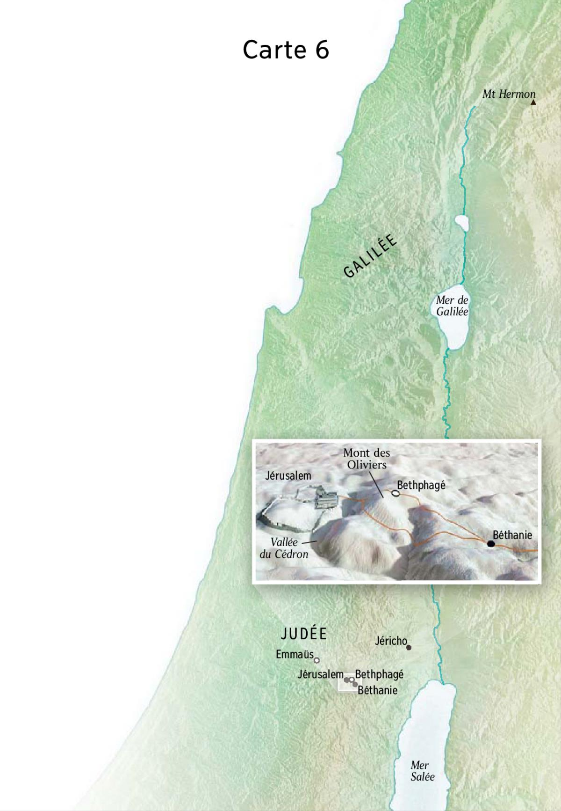

La quatrième Pâque

Carte 6
Jésus à Béthanie chez Simon le lépreux
Date: Samedi 28 mars 33, 8 Nisan
Lieu: Béthanie, Judée
Jean 11:55 : L’onction de Béthanie
55 Or c’était bientôt la Pâque juive. A la veille de cette Pâque, beaucoup de gens montèrent de la campagne à Jérusalem pour se purifier. 56 Ils cherchaient Jésus et, dans le temple où ils se tenaient, ils se disaient entre eux : « Qu’en pensez-vous ? Jamais il ne viendra à la fête ! » 57 Les grands prêtres et les Pharisiens avaient donné des ordres : quiconque saurait où il était devait le dénoncer afin qu’on se saisisse de lui.
Des judéens viennent voir Jésus et Lazare à Béthanie
Date: Samedi 28 mars 33, 8 Nisan
Lieu: Béthanie, Judée
Jean 12:9 :
9 Cependant une grande foule de Judéens avaient appris que Jésus était là, et ils arrivèrent non seulement à cause de Jésus lui-même, mais aussi pour voir ce Lazare qu’il avait relevé d’entre les morts. 10 Les grands prêtres dès lors décidèrent de faire mourir aussi Lazare, 11 puisque c’était à cause de lui qu’un grand nombre de Juifs les quittaient et croyaient en Jésus.
Entrée triomphale de Jésus à Jérusalem sur un âne
Date: Dimanche 29 mars 33, 9 Nisan
Lieu: Béthanie -> Bethphagé -> Jérusalem, Judée
Marc 11:1 : L’entrée triomphale à Jérusalem
1 Lorsqu’ils approchent de Jérusalem, près de Bethphagé et de Béthanie, vers le mont des Oliviers, Jésus envoie deux de ses disciples 2 et leur dit : « Allez au village qui est devant vous : dès que vous y entrerez, vous trouverez un ânon attaché que personne n’a encore monté. Détachez-le et amenez-le. 3 Et si quelqu’un vous dit : “Pourquoi faites-vous cela ?” répondez : “Le Seigneur en a besoin et il le renvoie ici tout de suite.” » 4 Ils sont partis et ont trouvé un ânon attaché dehors près d’une porte, dans la rue. Ils le détachent. 5 Quelques-uns de ceux qui se trouvaient là leur dirent : « Qu’avez-vous à détacher cet ânon ? » 6 Eux leur répondirent comme Jésus l’avait dit et on les laissa faire. 7 Ils amènent l’ânon à Jésus ; ils mettent sur lui leurs vêtements et Jésus s’assit dessus. 8 Beaucoup de gens étendirent leurs vêtements sur la route et d’autres des feuillages qu’ils coupaient dans la campagne. 9 Ceux qui marchaient devant et ceux qui suivaient criaient : « Hosanna ! Béni soit au nom du Seigneur celui qui vient ! 10 Béni soit le règne qui vient, le règne de David notre père ! Hosanna au plus haut des cieux ! »
Luc 19:28 : Parabole du prince qui va se faire investir : les mines
28 Sur ces mots, Jésus partit en avant pour monter à Jérusalem.
Luc 19:29 : L’entrée du roi Messie à Jérusalem
29 Or, quand il approcha de Bethphagé et de Béthanie, vers le mont dit des Oliviers, il envoya deux disciples 30 en leur disant : « Allez au village qui est en face ; en y entrant, vous trouverez un ânon attaché que personne n’a jamais monté. Détachez-le et amenez-le. 31 Et si quelqu’un vous demande : “Pourquoi le détachez-vous ?” vous répondrez : “Parce que le Seigneur en a besoin.” » 32 Les envoyés partirent et trouvèrent les choses comme Jésus leur avait dit. 33 Comme ils détachaient l’ânon, ses maîtres leur dirent : « Pourquoi détachez-vous cet ânon ? » 34 Ils répondirent : « Parce que le Seigneur en a besoin. » 35 Ils amenèrent alors la bête à Jésus, puis jetant sur elle leurs vêtements, ils firent monter Jésus ; 36 et à mesure qu’il avançait, ils étendaient leurs vêtements sur la route. 37 Déjà il approchait de la descente du mont des Oliviers, quand tous les disciples en masse, remplis de joie, se mirent à louer Dieu à pleine voix pour tous les miracles qu’ils avaient vus. 38 Ils disaient : « Béni soit celui qui vient, le roi, au nom du Seigneur ! Paix dans le ciel et gloire au plus haut des cieux ! » 39 Quelques Pharisiens, du milieu de la foule, dirent à Jésus : « Maître, reprends tes disciples ! » 40 Il répondit : « Je vous le dis : si eux se taisent, ce sont les pierres qui crieront. »
Matthieu 21:1 : Entrée messianique à Jérusalem
1 Lorsqu’ils approchèrent de Jérusalem et arrivèrent près de Bethphagé, au mont des Oliviers, alors Jésus envoya deux disciples 2 en leur disant : « Allez au village qui est devant vous ; vous trouverez aussitôt une ânesse attachée et un ânon avec elle ; détachez-la et amenez-les-moi. 3 Et si quelqu’un vous dit quelque chose, vous répondrez : “Le Seigneur en a besoin”, et il les laissera aller tout de suite. » 4 Cela est arrivé pour que s’accomplisse ce qu’a dit le prophète : 5 Dites à la fille de Sion : Voici que ton roi vient à toi, humble et monté sur une ânesse et sur un ânon, le petit d’une bête de somme. 6 Les disciples s’en allèrent et, comme Jésus le leur avait prescrit, 7 ils amenèrent l’ânesse et l’ânon ; puis ils disposèrent sur eux leurs vêtements, et Jésus s’assit dessus. 8 Le peuple, en foule, étendit ses vêtements sur la route ; certains coupaient des branches aux arbres et en jonchaient la route. 9 Les foules qui marchaient devant lui et celles qui le suivaient, criaient : « Hosanna au Fils de David ! Béni soit au nom du Seigneur celui qui vient ! Hosanna au plus haut des cieux ! » 10 Quand Jésus entra dans Jérusalem, toute la ville fut en émoi : « Qui est-ce ? » disait-on ; 11 et les foules répondaient : « C’est le prophète Jésus, de Nazareth en Galilée. »
Jean 12:12 : L’arrivée triomphale devant Jérusalem
12 Le lendemain, la grande foule venue à la fête apprit que Jésus arrivait à Jérusalem ; 13 ils prirent des branches de palmiers et sortirent à sa rencontre. Ils criaient : « Hosanna ! Béni soit au nom du Seigneur celui qui vient, le roi d’Israël. » 14 Trouvant un ânon, Jésus s’assit dessus selon qu’il est écrit : 15 Ne crains pas, fille de Sion : voici ton roi qui vient, il est monté sur le petit d’une ânesse. 16 Au premier moment, ses disciples ne comprirent pas ce qui arrivait, mais lorsque Jésus eut été glorifié, ils se souvinrent que cela avait été écrit à son sujet, et que c’était cela même qu’on avait fait pour lui. 17 Cependant la foule de ceux qui étaient avec lui lorsqu’il avait appelé Lazare hors du tombeau et qu’il l’avait relevé d’entre les morts, lui rendait témoignage. 18 C’était bien, en effet, parce qu’elle avait appris qu’il avait opéré ce signe qu’elle se portait à sa rencontre. 19 Les Pharisiens se dirent alors les uns aux autres : « Vous le voyez, vous n’arriverez à rien : voilà que le monde se met à sa suite ! »
Pleurs sur Jérusalem
Date: Dimanche 29 mars 33, 9 Nisan
Lieu: Jérusalem, Judée
Luc 19:41 : Jésus pleure sur Jérusalem
41 Quand il approcha de la ville et qu’il l’aperçut, il pleura sur elle. 42 Il disait : « Si toi aussi tu avais su, en ce jour, comment trouver la paix… ! Mais hélas ! cela a été caché à tes yeux ! 43 Oui, pour toi des jours vont venir où tes ennemis établiront contre toi des ouvrages de siège ; ils t’encercleront et te serreront de toutes parts ; 44 ils t’écraseront, toi et tes enfants au milieu de toi ; et ils ne laisseront pas en toi pierre sur pierre, parce que tu n’as pas reconnu le temps où tu as été visitée. »
Des grecs cherchent Jésus
Date: Dimanche 29 mars 33, 9 Nisan
Lieu: Jérusalem, Judée
Jean 12:20 : La gloire et la croix
20 Il y avait quelques Grecs qui étaient montés pour adorer à l’occasion de la fête. 21 Ils s’adressèrent à Philippe qui était de Bethsaïda de Galilée et ils lui firent cette demande : « Seigneur, nous voudrions voir Jésus. » 22 Philippe alla le dire à André, et ensemble ils le dirent à Jésus. 23 Jésus leur répondit en ces termes : « Elle est venue, l’heure où le Fils de l’homme doit être glorifié. 24 En vérité, en vérité, je vous le dis, si le grain de blé qui tombe en terre ne meurt pas, il reste seul ; si au contraire il meurt, il porte du fruit en abondance. 25 Celui qui aime sa vie la perd, et celui qui cesse de s’y attacher en ce monde la gardera pour la vie éternelle. 26 Si quelqu’un veut me servir, qu’il se mette à ma suite, et là où je suis, là aussi sera mon serviteur. Si quelqu’un me sert, le Père l’honorera. 27 « Maintenant mon âme est troublée, et que dirai-je ? Père, sauve-moi de cette heure ? Mais c’est précisément pour cette heure que je suis venu. 28 Père, glorifie ton nom. » Alors, une voix vint du ciel : « Je l’ai glorifié et je le glorifierai encore. » 29 La foule qui se trouvait là et qui avait entendu disait que c’était le tonnerre ; d’autres disaient qu’un ange lui avait parlé. 30 Jésus reprit la parole : « Ce n’est pas pour moi que cette voix a retenti, mais bien pour vous. 31 C’est maintenant le jugement de ce monde, maintenant le prince de ce monde va être jeté dehors. 32 Pour moi, quand j’aurai été élevé de terre, j’attirerai à moi tous les hommes. » 33 – Par ces paroles il indiquait de quelle mort il allait mourir. 34 La foule lui répondit : « Nous avons appris par la Loi que le Messie doit rester à jamais. Comment peux-tu dire qu’il faut que le Fils de l’homme soit élevé ? Qui est-il, ce Fils de l’homme ? » 35 Jésus leur répondit : « La lumière est encore parmi vous pour un peu de temps. Marchez pendant que vous avez la lumière, pour que les ténèbres ne s’emparent pas de vous : car celui qui marche dans les ténèbres ne sait où il va. 36 Pendant que vous avez la lumière croyez en la lumière, pour devenir des fils de lumière. » Après leur avoir ainsi parlé, Jésus se retira et se cacha d’eux.
Jésus visite le temple et retourne dormir à Béthanie
Date: Dimanche 29 mars 33, 9 Nisan
Lieu: Jérusalem, Judée
Marc 11:11 : L’entrée triomphale à Jérusalem
11 Et il entra à Jérusalem dans le temple. Après avoir tout regardé autour de lui, comme c’était déjà le soir, il sortit pour se rendre à Béthanie avec les Douze.
Matthieu 21:14 : Les vendeurs chassés du temple
14 Des aveugles et des boiteux s’avancèrent vers lui dans le temple, et il les guérit. 15 Voyant les choses étonnantes qu’il venait de faire et ces enfants qui criaient dans le temple : « Hosanna au Fils de David ! », les grands prêtres et les scribes furent indignés 16 et ils lui dirent : « Tu entends ce qu’ils disent ? » Mais Jésus leur dit : « Oui ; n’avez-vous jamais lu ce texte : Par la bouche des tout-petits et des nourrissons, tu t’es préparé une louange ? » 17 Puis il les planta là et sortit de la ville pour se rendre à Béthanie, où il passa la nuit.
Jean 12:37 : Epilogue. Les conditions de la foi véritable
37 Quoiqu’il eût opéré devant eux tant de signes, ils ne croyaient pas en lui, 38 de sorte que s’accomplît la parole que le prophète Esaïe avait dite : Seigneur, qui a cru ce qu’on nous avait entendu dire ? et à qui le bras du Seigneur a-t-il été révélé ? 39 Le même Esaïe a indiqué la raison pour laquelle ils ne pouvaient croire : 40 Il a aveuglé leurs yeux et il a endurci leur cœur, pour qu’ils ne voient pas de leurs yeux, que leur cœur ne comprenne pas, qu’ils ne se convertissent pas, et je les aurais guéris ! 41 Cela, Esaïe le dit parce qu’il a vu sa gloire et qu’il a parlé de lui. 42 Cependant, parmi les dirigeants eux-mêmes, beaucoup avaient cru en lui ; mais, à cause des Pharisiens, ils n’osaient le confesser, de crainte d’être exclus de la synagogue : 43 c’est qu’ils préféraient la gloire qui vient des hommes à la gloire qui vient de Dieu.
Le figuier stérile
Date: Lundi 30 mars 33, 10 Nisan
Lieu: Béthanie -> Jérusalem, Judée
Marc 11:12 : Le figuier stérile
12 Le lendemain, à leur sortie de Béthanie, il eut faim. 13 Voyant de loin un figuier qui avait des feuilles, il alla voir s’il n’y trouverait pas quelque chose. Et s’étant approché, il ne trouva que des feuilles, car ce n’était pas le temps des figues. 14 S’adressant à lui, il dit : « Que jamais plus personne ne mange de tes fruits ! » Et ses disciples écoutaient.
Matthieu 21:18 : Le figuier sans fruit
18 Comme il revenait à la ville de bon matin, il eut faim. 19 Voyant un figuier près du chemin, il s’en approcha, mais il n’y trouva rien, que des feuilles. Il lui dit : « Jamais plus tu ne porteras de fruit ! » A l’instant même, le figuier sécha.
Jésus chasse les marchands du temple
Date: Lundi 30 mars 33, 10 Nisan
Lieu: Jérusalem, Judée
Marc 11:15 : Les vendeurs chassés du temple
15 Ils arrivent à Jérusalem. Entrant dans le temple, Jésus se mit à chasser ceux qui vendaient et achetaient dans le temple ; il renversa les tables des changeurs et les sièges des marchands de colombes, 16 et il ne laissait personne traverser le temple en portant quoi que ce soit. 17 Et il les enseignait et leur disait : « N’est-il pas écrit : Ma maison sera appelée maison de prière pour toutes les nations ? Mais vous, vous en avez fait une caverne de bandits. »
Luc 19:45 : Jésus entre dans le temple et y exerce son autorité
45 Puis Jésus entra dans le temple et se mit à chasser ceux qui vendaient. 46 Il leur disait : « Il est écrit : Ma maison sera une maison de prière ; mais vous, vous en avez fait une caverne de bandits. »
Matthieu 21:12 : Les vendeurs chassés du temple
12 Puis Jésus entra dans le temple et chassa tous ceux qui vendaient et achetaient dans le temple ; il renversa les tables des changeurs et les sièges des marchands de colombes. 13 Et il leur dit : « Il est écrit : Ma maison sera appelée maison de prière ; mais vous, vous en faites une caverne de bandits ! »
Les prêtres et les scribes veulent tuer Jésus
Date: Lundi 30 mars 33, 10 Nisan
Lieu: Jérusalem, Judée
Marc 11:18 : Les vendeurs chassés du temple
18 Les grands prêtres et les scribes l’apprirent et ils cherchaient comment ils le feraient périr. Car ils le redoutaient, parce que la foule était frappée de son enseignement.
Luc 19:47 : Jésus entre dans le temple et y exerce son autorité
47 Il était chaque jour à enseigner dans le temple. Les grands prêtres et les scribes cherchaient à le faire périr, et aussi les chefs du peuple ; 48 mais ils ne trouvaient pas ce qu’ils pourraient faire, car tout le peuple, suspendu à ses lèvres, l’écoutait.
Retour à Béthanie
Date: Lundi 30 mars 33, 10 Nisan
Lieu: Béthanie, Judée
Marc 11:19 : Les vendeurs chassés du temple
19 Le soir venu, Jésus et ses disciples sortirent de la ville.
La foi véritable
Date: Lundi 30 mars 33, 10 Nisan
Lieu: Béthanie, Judée
Jean 12:44 : Epilogue. Les conditions de la foi véritable
44 Cependant, Jésus proclama : « Qui croit en moi, ce n’est pas en moi qu’il croit, mais en celui qui m’a envoyé, 45 et celui qui me voit, voit aussi celui qui m’a envoyé. 46 Moi, la lumière, je suis venu dans le monde, afin que quiconque croit en moi ne demeure pas dans les ténèbres. 47 Si quelqu’un entend mes paroles et ne les garde pas, ce n’est pas moi qui le juge : car je ne suis pas venu juger le monde, je suis venu sauver le monde. 48 Qui me rejette et ne reçoit pas mes paroles a son juge : la parole que j’ai dite le jugera au dernier jour. 49 Je n’ai pas parlé de moi-même, mais le Père qui m’a envoyé m’a prescrit ce que j’ai à dire et à déclarer. 50 Et je sais que son commandement est vie éternelle : ce que je dis, je le dis comme le Père me l’a dit. »
Enseignement du figuier
Date: Mardi 31 mars 33, 11 Nisan
Lieu: Judée
Marc 11:20 : Le figuier desséché. Foi et prière
20 En passant le matin, ils virent le figuier desséché jusqu’aux racines. 21 Pierre, se rappelant, lui dit : « Rabbi, regarde, le figuier que tu as maudit est tout sec. » 22 Jésus leur répond et dit : « Ayez foi en Dieu. 23 En vérité, je vous le déclare, si quelqu’un dit à cette montagne : “Ote-toi de là et jette-toi dans la mer”, et s’il ne doute pas en son cœur, mais croit que ce qu’il dit arrivera, cela lui sera accordé. 24 C’est pourquoi je vous déclare : Tout ce que vous demandez en priant, croyez que vous l’avez reçu, et cela vous sera accordé. 25 Et quand vous êtes debout en prière, si vous avez quelque chose contre quelqu’un, pardonnez, pour que votre Père qui est aux cieux vous pardonne aussi vos fautes. » [ 26 ]
Matthieu 21:20 : Le figuier sans fruit
20 Voyant cela, les disciples furent saisis d’étonnement et dirent : « Comment, à l’instant même, le figuier a-t-il séché ? » 21 Jésus leur répondit : « En vérité, je vous le déclare, si un jour vous avez la foi et ne doutez pas, non seulement vous ferez ce que je viens de faire au figuier, mais même si vous dites à cette montagne : “Ote-toi de là et jette-toi dans la mer”, cela se fera. 22 Tout ce que vous demanderez dans la prière avec foi, vous le recevrez. »
Il enseigne au temple, Son autorité mise en question par le sanhédrin
Date: Mardi 31 mars 33, 11 Nisan
Lieu: Temple, Jérusalem, Judée
Marc 11:27 : L’autorité de Jésus mise en question
27 Ils reviennent à Jérusalem. Alors que Jésus allait et venait dans le temple, les grands prêtres, les scribes et les anciens s’approchent de lui. 28 Ils lui disaient : « En vertu de quelle autorité fais-tu cela ? Ou qui t’a donné autorité pour le faire ? » 29 Jésus leur dit : « Je vais vous poser une seule question ; répondez-moi et je vous dirai en vertu de quelle autorité je fais cela. 30 Le baptême de Jean venait-il du ciel ou des hommes ? Répondez-moi ! » 31 Ils raisonnaient ainsi entre eux : « Si nous disons : “Du ciel”, il dira : “Pourquoi donc n’avez-vous pas cru en lui ?” 32 Allons-nous dire au contraire : “Des hommes” ?… » Ils redoutaient la foule, car tous pensaient que Jean était réellement un prophète. 33 Alors ils répondent à Jésus : « Nous ne savons pas. » Et Jésus leur dit : « Moi non plus, je ne vous dis pas en vertu de quelle autorité je fais cela. »
Luc 20:1 : Question de membres du Sanhédrin sur l’autorité de Jésus
1 Or, un de ces jours-là, comme Jésus enseignait au peuple dans le temple et annonçait la Bonne Nouvelle, survinrent les grands prêtres et les scribes avec les anciens. 2 Ils lui dirent : « Dis-nous en vertu de quelle autorité tu fais cela, ou quel est celui qui t’a donné cette autorité ? » 3 Il leur répondit : « Moi aussi, je vais vous poser une question. Dites-moi : 4 Le baptême de Jean, venait-il du ciel ou des hommes ? » 5 Ils réfléchirent entre eux : « Si nous disons : “Du ciel”, il dira : “Pourquoi n’avez-vous pas cru en lui ?” 6 Et si nous disons : “Des hommes”, tout le peuple nous lapidera, car il est convaincu que Jean était un prophète. » 7 Alors ils répondirent qu’ils ne savaient pas d’où il venait. 8 Et Jésus leur dit : « Moi non plus, je ne vous dis pas en vertu de quelle autorité je fais cela. »
Matthieu 21:23 : Question des Juifs sur l’autorité de Jésus
23 Quand il fut entré dans le temple, les grands prêtres et les anciens du peuple s’avancèrent vers lui pendant qu’il enseignait, et ils lui dirent : « En vertu de quelle autorité fais-tu cela ? Et qui t’a donné cette autorité ? » 24 Jésus leur répondit : « Moi aussi, je vais vous poser une question, une seule ; si vous me répondez, je vous dirai à mon tour en vertu de quelle autorité je fais cela. 25 Le baptême de Jean, d’où venait-il ? Du ciel ou des hommes ? » Ils raisonnèrent en eux-mêmes : « Si nous disons : “Du ciel”, il nous dira : “Pourquoi donc n’avez-vous pas cru en lui ?” 26 Et si nous disons : “Des hommes”, nous devons redouter la foule, car tous tiennent Jean pour un prophète. » 27 Alors ils répondirent à Jésus : « Nous ne savons pas. » Et lui aussi leur dit : « Moi non plus, je ne vous dis pas en vertu de quelle autorité je fais cela. »
Parabole des deux fils
Date: Mardi 31 mars 33, 11 Nisan
Lieu: Temple, Jérusalem, Judée
Matthieu 21:28 : Les deux fils
28 « Quel est votre avis ? Un homme avait deux fils. S’avançant vers le premier, il lui dit : “Mon enfant, va donc aujourd’hui travailler à la vigne.” 29 Celui-ci lui répondit : “Je ne veux pas” ; un peu plus tard, pris de remords, il y alla. 30 S’avançant vers le second, il lui dit la même chose. Celui-ci lui répondit : “J’y vais, Seigneur” ; mais il n’y alla pas. 31 Lequel des deux a fait la volonté de son père ? » – « Le premier », répondent-ils. Jésus leur dit : « En vérité, je vous le déclare, collecteurs d’impôts et prostituées vous précèdent dans le Royaume de Dieu. 32 En effet, Jean est venu à vous dans le chemin de la justice, et vous ne l’avez pas cru ; collecteurs d’impôts et prostituées, au contraire, l’ont cru. Et vous, voyant cela, vous ne vous êtes pas dans la suite davantage repentis pour le croire. »
Parabole des vignerons
Date: Mardi 31 mars 33, 11 Nisan
Lieu: Temple, Jérusalem, Judée
Marc 12:1 : Parabole des vignerons meurtriers
1 Et il se mit à leur parler en paraboles. « Un homme a planté une vigne, l’a entourée d’une clôture, il a creusé une cuve et bâti une tour ; puis il l’a donnée en fermage à des vignerons et il est parti. 2 « Le moment venu, il a envoyé un serviteur aux vignerons pour recevoir d’eux sa part des fruits de la vigne. 3 Les vignerons l’ont saisi, roué de coups et renvoyé les mains vides. 4 Il leur a envoyé encore un autre serviteur ; celui-là aussi, ils l’ont frappé à la tête et insulté. 5 Il en a envoyé un autre – celui-là ils l’ont tué –, puis beaucoup d’autres : ils ont roué de coups les uns et tué les autres. 6 Il ne lui restait plus que son fils bien-aimé. Il l’a envoyé en dernier vers eux en disant : “Ils respecteront mon fils.” 7 Mais ces vignerons se sont dit entre eux : “C’est l’héritier. Venez ! Tuons-le, et nous aurons l’héritage.” 8 Ils l’ont saisi, tué et jeté hors de la vigne. 9 Que fera le maître de la vigne ? Il viendra, il fera périr les vignerons et confiera la vigne à d’autres. 10 N’avez-vous pas lu ce passage de l’Ecriture : La pierre qu’ont rejetée les bâtisseurs, c’est elle qui est devenue la pierre angulaire. 11 C’est là l’œuvre du Seigneur : quelle merveille à nos yeux ! » 12 Ils cherchaient à l’arrêter, mais ils eurent peur de la foule. Ils avaient bien compris que c’était pour eux qu’il avait dit cette parabole. Et le laissant, ils s’en allèrent. L’impôt dû à César
Luc 20:9 : Parabole des vignerons meurtriers
9 Et il se mit à dire au peuple cette parabole : « Un homme planta une vigne, il la donna en fermage à des vignerons et partit pour longtemps. 10 Le moment venu, il envoya un serviteur aux vignerons pour qu’ils lui donnent sa part du fruit de la vigne ; mais les vignerons le renvoyèrent roué de coups et les mains vides. 11 Il recommença en envoyant un autre serviteur ; lui aussi, ils le rouèrent de coups, l’insultèrent et le renvoyèrent les mains vides. 12 Il recommença en envoyant un troisième ; lui aussi, ils le blessèrent et le chassèrent. 13 Le maître de la vigne se dit alors : “Que faire ? Je vais envoyer mon fils bien-aimé. Lui, ils vont bien le respecter.” 14 Mais, à la vue du fils, les vignerons firent entre eux ce raisonnement : “C’est l’héritier. Tuons-le pour que l’héritage soit à nous !” 15 Et le jetant hors de la vigne, ils le tuèrent. Que leur fera donc le maître de la vigne ? 16 Il viendra, il fera périr ces vignerons et confiera la vigne à d’autres. » A ces mots, ils dirent : « Non, jamais ! » 17 Mais Jésus, les regardant en face, leur dit : « Que signifie donc ce texte de l’Ecriture : La pierre qu’ont rejetée les bâtisseurs, c’est elle qui est devenue la pierre angulaire ? 18 Tout homme qui tombe sur cette pierre sera brisé, et celui sur qui elle tombera, elle l’écrasera. »
Matthieu 21:33 : Les métayers révoltés
33 « Ecoutez une autre parabole. Il y avait un propriétaire qui planta une vigne, l’entoura d’une clôture, y creusa un pressoir et bâtit une tour ; puis il la donna en fermage à des vignerons et partit en voyage. 34 Quand le temps des fruits approcha, il envoya ses serviteurs aux vignerons pour recevoir les fruits qui lui revenaient. 35 Mais les vignerons saisirent ces serviteurs ; l’un, ils le rouèrent de coups ; un autre, ils le tuèrent ; un autre, ils le lapidèrent. 36 Il envoya encore d’autres serviteurs, plus nombreux que les premiers ; ils les traitèrent de même. 37 Finalement, il leur envoya son fils, en se disant : “Ils respecteront mon fils.” 38 Mais les vignerons, voyant le fils, se dirent entre eux : “C’est l’héritier. Venez ! Tuons-le et emparons-nous de l’héritage.” 39 Ils se saisirent de lui, le jetèrent hors de la vigne et le tuèrent. 40 Eh bien ! lorsque viendra le maître de la vigne, que fera-t-il à ces vignerons-là ? » 41 Ils lui répondirent : « Il fera périr misérablement ces misérables, et il donnera la vigne en fermage à d’autres vignerons, qui lui remettront les fruits en temps voulu. » 42 Jésus leur dit : « N’avez-vous jamais lu dans les Ecritures : La pierre qu’ont rejetée les bâtisseurs, c’est elle qui est devenue la pierre angulaire ; c’est là l’œuvre du Seigneur : Quelle merveille à nos yeux. 43 Aussi je vous le déclare : le Royaume de Dieu vous sera enlevé, et il sera donné à un peuple qui en produira les fruits. 44 Celui qui tombera sur cette pierre sera brisé, et celui sur qui elle tombera, elle l’écrasera. » 45 En entendant ses paraboles, les grands prêtres et les Pharisiens comprirent que c’était d’eux qu’il parlait. 46 Ils cherchaient à l’arrêter, mais ils eurent peur des foules, car elles le tenaient pour un prophète.
Parabole des noces
Date: Mardi 31 mars 33, 11 Nisan
Lieu: Temple, Jérusalem, Judée
Matthieu 22:1 : Le festin nuptial
1 Et Jésus se remit à leur parler en paraboles : 2 « Il en va du Royaume des cieux comme d’un roi qui fit un festin de noces pour son fils. 3 Il envoya ses serviteurs appeler à la noce les invités. Mais eux ne voulaient pas venir. 4 Il envoya encore d’autres serviteurs chargés de dire aux invités : “Voici, j’ai apprêté mon banquet ; mes taureaux et mes bêtes grasses sont égorgés, tout est prêt, venez aux noces.” 5 Mais eux, sans en tenir compte, s’en allèrent, l’un à son champ, l’autre à son commerce ; 6 les autres, saisissant les serviteurs, les maltraitèrent et les tuèrent. 7 Le roi se mit en colère ; il envoya ses troupes, fit périr ces assassins et incendia leur ville. 8 Alors il dit à ses serviteurs : “La noce est prête, mais les invités n’en étaient pas dignes. 9 Allez donc aux places d’où partent les chemins et convoquez à la noce tous ceux que vous trouverez.” 10 Ces serviteurs s’en allèrent par les chemins et rassemblèrent tous ceux qu’ils trouvèrent, mauvais et bons. Et la salle de noce fut remplie de convives. 11 Entré pour regarder les convives, le roi aperçut là un homme qui ne portait pas de vêtement de noce. 12 “Mon ami, lui dit-il, comment es-tu entré ici sans avoir de vêtement de noce ?” Celui-ci resta muet. 13 Alors le roi dit aux servants : “Jetez-le, pieds et poings liés, dans les ténèbres du dehors : là seront les pleurs et les grincements de dents.” 14 Certes, la multitude est appelée, mais peu sont élus. »
Les pharisiens et les hérodiens lui posent des questions pièges sur le tribut dû à César
Date: Mardi 31 mars 33, 11 Nisan
Lieu: Temple, Jérusalem, Judée
Marc 12:13 : L’impôt dû à César
13 Ils envoient auprès de Jésus quelques Pharisiens et quelques Hérodiens pour le prendre au piège en le faisant parler. 14 Ils viennent lui dire : « Maître, nous savons que tu es franc et que tu ne te laisses pas influencer par qui que ce soit : tu ne tiens pas compte de la condition des gens, mais tu enseignes les chemins de Dieu selon la vérité. Est-il permis, oui ou non, de payer le tribut à César ? Devons-nous payer ou ne pas payer ? » 15 Mais lui, connaissant leur hypocrisie, leur dit : « Pourquoi me tendez-vous un piège ? Apportez-moi une pièce d’argent, que je voie ! » 16 Ils en apportèrent une. Jésus leur dit : « Cette effigie et cette inscription, de qui sont-elles ? » Ils lui répondirent : « De César. » 17 Jésus leur dit : « Rendez à César ce qui est à César, et à Dieu ce qui est à Dieu. » Et ils restaient à son propos dans un grand étonnement.
Luc 20:19 : Parabole des vignerons meurtriers
19 Les scribes et les grands prêtres cherchèrent à mettre la main sur lui à l’instant même, mais ils eurent peur du peuple. Ils avaient bien compris que c’était pour eux qu’il avait dit cette parabole.
Luc 20:20 : Piège tendu à Jésus à propos de l’impôt dû à César
20 S’étant postés en observation, ils envoyèrent à Jésus des indicateurs jouant les justes ; ils voulaient le prendre en défaut dans ce qu’il dirait, pour le livrer à l’autorité et au pouvoir du gouverneur. 21 Ils lui posèrent cette question : « Maître, nous savons que tu parles et enseignes de façon correcte, que tu es impartial et que tu enseignes les chemins de Dieu selon la vérité. 22 Nous est-il permis, oui ou non, de payer l’impôt à César ? » 23 Pénétrant leur fourberie, Jésus leur dit : 24 « Faites-moi voir une pièce d’argent. De qui porte-t-elle l’effigie et l’inscription ? » Ils répondirent : « De César. » 25 Il leur dit : « Eh bien ! rendez à César ce qui est à César, et à Dieu ce qui est à Dieu. » 26 Et ils ne purent le prendre en défaut devant le peuple dans ses propos et, étonnés de sa réponse, ils gardèrent le silence.
Matthieu 22:15 : Le tribut à César
15 Alors les Pharisiens allèrent tenir conseil afin de le prendre au piège en le faisant parler. 16 Ils lui envoient leurs disciples, avec les Hérodiens, pour lui dire : « Maître, nous savons que tu es franc et que tu enseignes les chemins de Dieu en toute vérité, sans te laisser influencer par qui que ce soit, car tu ne tiens pas compte de la condition des gens. 17 Dis-nous donc ton avis : Est-il permis, oui ou non, de payer le tribut à César ? » 18 Mais Jésus, s’apercevant de leur malice, dit : « Hypocrites ! Pourquoi me tendez-vous un piège ? 19 Montrez-moi la monnaie qui sert à payer le tribut. » Ils lui présentèrent une pièce d’argent. 20 Il leur dit : « Cette effigie et cette inscription, de qui sont-elles ? » 21 Ils répondent : « De César. » Alors il leur dit : « Rendez donc à César ce qui est à César, et à Dieu ce qui est à Dieu. » 22 A ces mots, ils furent tout étonnés et, le laissant, ils s’en allèrent.
Les sadducéens le questionnent sur la résurrection
Date: Mardi 31 mars 33, 11 Nisan
Lieu: Temple, Jérusalem, Judée
Marc 12:18 : La résurrection des morts
18 Des Sadducéens viennent auprès de lui. Ces gens disent qu’il n’y a pas de résurrection. Ils lui posaient cette question : 19 « Maître, Moïse a écrit pour nous : Si un homme a un frère qui meurt en laissant une femme, mais sans laisser d’enfant, qu’il épouse la veuve et donne une descendance à son frère… 20 Il y avait sept frères. Le premier a pris femme et est mort sans laisser de descendance. 21 Le second a épousé cette femme et est mort sans laisser de descendance. Le troisième également, 22 et les sept n’ont laissé aucune descendance. Après eux tous, la femme est morte aussi. 23 A la résurrection, quand ils ressusciteront, duquel d’entre eux sera-t-elle la femme, puisque les sept l’ont eue pour femme ? » 24 Jésus leur dit : « N’est-ce point parce que vous ne connaissez ni les Ecritures ni la puissance de Dieu que vous êtes dans l’erreur ? 25 En effet, quand on ressuscite d’entre les morts, on ne prend ni femme ni mari, mais on est comme des anges dans les cieux. 26 Quant au fait que les morts doivent ressusciter, n’avez-vous pas lu dans le livre de Moïse, au récit du buisson ardent, comment Dieu lui a dit : “Je suis le Dieu d’Abraham, le Dieu d’Isaac et le Dieu de Jacob” ? 27 Il n’est pas le Dieu des morts, mais des vivants. Vous êtes complètement dans l’erreur. »
Luc 20:27 : Question des Sadducéens sur la résurrection
27 Alors s’approchèrent quelques Sadducéens. Les Sadducéens contestent qu’il y ait une résurrection. Ils lui posèrent cette question : 28 « Maître, Moïse a écrit pour nous : Si un homme a un frère marié qui meurt sans enfants, qu’il épouse la veuve et donne une descendance à son frère. 29 Or il y avait sept frères. Le premier prit femme et mourut sans enfant. 30 Le second, 31 puis le troisième épousèrent la femme, et ainsi tous les sept : ils moururent sans laisser d’enfant. 32 Finalement la femme mourut aussi. 33 Eh bien ! cette femme, à la résurrection, duquel d’entre eux sera-t-elle la femme, puisque les sept l’ont eue pour femme ? » 34 Jésus leur dit : « Ceux qui appartiennent à ce monde-ci prennent femme ou mari. 35 Mais ceux qui ont été jugés dignes d’avoir part au monde à venir et à la résurrection des morts ne prennent ni femme ni mari. 36 C’est qu’ils ne peuvent plus mourir, car ils sont pareils aux anges : ils sont fils de Dieu puisqu’ils sont fils de la résurrection. 37 Et que les morts doivent ressusciter, Moïse lui-même l’a indiqué dans le récit du buisson ardent, quand il appelle le Seigneur le Dieu d’Abraham, le Dieu d’Isaac et le Dieu de Jacob. 38 Dieu n’est pas le Dieu des morts, mais des vivants, car tous sont vivants pour lui. » 39 Quelques scribes, prenant la parole, dirent : « Maître, tu as bien parlé. »
Matthieu 22:23 : A la résurrection des morts
23 Ce jour-là, des Sadducéens s’approchèrent de lui. Les Sadducéens disent qu’il n’y a pas de résurrection. Ils lui posèrent cette question : 24 « Maître, Moïse a dit : Si quelqu’un meurt sans avoir d’enfants, son frère épousera la veuve, pour donner une descendance à son frère. 25 Or il y avait chez nous sept frères. Le premier, qui était marié, mourut ; et comme il n’avait pas de descendance, il laissa sa femme à son frère ; 26 de même le deuxième, le troisième, et ainsi jusqu’au septième. 27 Finalement, après eux tous, la femme mourut. 28 Eh bien ! A la résurrection, duquel des sept sera-t-elle la femme, puisque tous l’ont eue pour femme ? » 29 Jésus leur répondit : « Vous êtes dans l’erreur, parce que vous ne connaissez ni les Ecritures ni la puissance de Dieu. 30 A la résurrection, en effet, on ne prend ni femme ni mari ; mais on est comme des anges dans le ciel. 31 Et pour ce qui est de la résurrection des morts, n’avez-vous pas lu la parole que Dieu vous a dite : 32 Je suis le Dieu d’Abraham, le Dieu d’Isaac et le Dieu de Jacob ? Il n’est pas le Dieu des morts, mais des vivants. » 33 En entendant cela, les foules étaient frappées de son enseignement.
Il répond au sujet du plus grand commandement à un scribe
Date: Mardi 31 mars 33, 11 Nisan
Lieu: Temple, Jérusalem, Judée
Marc 12:28 : Le premier commandement
28 Un scribe s’avança. Il les avait entendus discuter et voyait que Jésus leur avait bien répondu. Il lui demanda : « Quel est le premier de tous les commandements ? » 29 Jésus répondit : « Le premier, c’est : Ecoute, Israël, le Seigneur notre Dieu est l’unique Seigneur ; 30 tu aimeras le Seigneur ton Dieu de tout ton cœur, de toute ton âme, de toute ta pensée et de toute ta force. 31 Voici le second : Tu aimeras ton prochain comme toi-même. Il n’y a pas d’autre commandement plus grand que ceux-là. » 32 Le scribe lui dit : « Très bien, Maître, tu as dit vrai : Il est unique et il n’y en a pas d’autre que lui, 33 et l’aimer de tout son cœur, de toute son intelligence, de toute sa force, et aimer son prochain comme soi-même, cela vaut mieux que tous les holocaustes et sacrifices. » 34 Jésus, voyant qu’il avait répondu avec sagesse, lui dit : « Tu n’es pas loin du Royaume de Dieu. » Et personne n’osait plus l’interroger.
Matthieu 22:34 : Le plus grand commandement
34 Apprenant qu’il avait fermé la bouche aux Sadducéens, les Pharisiens se réunirent. 35 Et l’un d’eux, un légiste, lui demanda pour lui tendre un piège : 36 « Maître, quel est le grand commandement dans la Loi ? » 37 Jésus lui déclara : « Tu aimeras le Seigneur ton Dieu de tout ton cœur, de toute ton âme et de toute ta pensée. 38 C’est là le grand, le premier commandement. 39 Un second est aussi important : Tu aimeras ton prochain comme toi-même. 40 De ces deux commandements dépendent toute la Loi et les Prophètes. »
Jésus demande aux pharisiens de qui le Messie est le fils.
Date: Mardi 31 mars 33, 11 Nisan
Lieu: Temple, Jérusalem, Judée
Marc 12:35 : Le Messie et David
35 Prenant la parole, Jésus enseignait dans le temple. Il disait : « Comment les scribes peuvent-ils dire que le Messie est fils de David ? 36 David lui-même, inspiré par l’Esprit Saint, a dit : Le Seigneur a dit à mon Seigneur : Siège à ma droite jusqu’à ce que j’aie mis tes ennemis sous tes pieds. 37 David lui-même l’appelle Seigneur ; alors, de quelle façon est-il son fils ? » La foule nombreuse l’écoutait avec plaisir. Les scribes jugés par Jésus
Luc 20:40 : Question des Sadducéens sur la résurrection
40 Car ils n’osaient plus l’interroger sur rien.
Luc 20:41 : Le Messie, fils et Seigneur de David
41 Il leur dit alors : « Comment peut-on dire que le Messie est fils de David, 42 puisque David lui-même dit au livre des Psaumes : Le Seigneur a dit à mon Seigneur : Siège à ma droite, 43 jusqu’à ce que j’aie fait de tes ennemis un escabeau sous tes pieds ? 44 Ainsi David l’appelle Seigneur. Alors, comment est-il son fils ? »
Matthieu 22:41 : Le fils de David et son Seigneur
41 Comme les Pharisiens se trouvaient réunis, Jésus leur posa cette question : 42 « Quelle est votre opinion au sujet du Messie ? De qui est-il fils ? » Ils lui répondent : « De David. » 43 Jésus leur dit : « Comment donc David, inspiré par l’Esprit, l’appelle-t-il Seigneur, en disant : 44 Le Seigneur a dit à mon Seigneur : Siège à ma droite jusqu’à ce que j’aie mis tes ennemis sous tes pieds ? 45 Si donc David l’appelle Seigneur, comment est-il son fils ? » 46 Personne ne fut capable de lui répondre un mot. Et, depuis ce jour-là, nul n’osa plus l’interroger.
Les sept reproches aux scribes et aux pharisiens
Date: Mardi 31 mars 33, 11 Nisan
Lieu: Temple, Jérusalem, Judée
Matthieu 23:1 : Invectives contre les Pharisiens
1 Alors Jésus s’adressa aux foules et à ses disciples : 2 « Les scribes et les Pharisiens siègent dans la chaire de Moïse : 3 faites donc et observez tout ce qu’ils peuvent vous dire, mais ne vous réglez pas sur leurs actes, car ils disent et ne font pas. 4 Ils lient de pesants fardeaux et les mettent sur les épaules des hommes, alors qu’eux-mêmes se refusent à les remuer du doigt. 5 Toutes leurs actions, ils les font pour se faire remarquer des hommes. Ils élargissent leurs phylactères et allongent leurs franges. 6 Ils aiment à occuper les premières places dans les dîners et les premiers sièges dans les synagogues, 7 à être salués sur les places publiques et à s’entendre appeler “Maître” par les hommes. 8 Pour vous, ne vous faites pas appeler “Maître”, car vous n’avez qu’un seul Maître et vous êtes tous frères. 9 N’appelez personne sur la terre votre “Père”, car vous n’en avez qu’un seul, le Père céleste. 10 Ne vous faites pas non plus appeler “Docteurs”, car vous n’avez qu’un seul Docteur, le Christ. 11 Le plus grand parmi vous sera votre serviteur. 12 Quiconque s’élèvera sera abaissé, et quiconque s’abaissera sera élevé. 13 Malheureux êtes-vous, scribes et Pharisiens hypocrites, vous qui fermez devant les hommes l’entrée du Royaume des cieux ! Vous-mêmes en effet n’y entrez pas, et vous ne laissez pas entrer ceux qui le voudraient ! [ 14 ] 15 Malheureux êtes-vous, scribes et Pharisiens hypocrites, vous qui parcourez mers et continents pour gagner un seul prosélyte, et, quand il l’est devenu, vous le rendez digne de la géhenne, deux fois plus que vous ! 16 Malheureux êtes-vous, guides aveugles, vous qui dites : “Si l’on jure par le sanctuaire, cela ne compte pas ; mais si l’on jure par l’or du sanctuaire, on est tenu.” 17 Insensés et aveugles ! Qu’est-ce donc qui l’emporte, l’or, ou le sanctuaire qui a rendu sacré cet or ? 18 Vous dites encore : “Si l’on jure par l’autel, cela ne compte pas, mais si l’on jure par l’offrande placée dessus, on est tenu.” 19 Aveugles ! Qu’est-ce donc qui l’emporte, l’offrande, ou l’autel qui rend sacrée cette offrande ? 20 Aussi bien, celui qui jure par l’autel jure-t-il par lui et par tout ce qui est dessus ; 21 celui qui jure par le sanctuaire jure par lui et par celui qui l’habite ; 22 celui qui jure par le ciel jure par le trône de Dieu et par celui qui y siège. 23 Malheureux êtes-vous, scribes et Pharisiens hypocrites, vous qui versez la dîme de la menthe, du fenouil et du cumin, alors que vous négligez ce qu’il y a de plus grave dans la Loi : la justice, la miséricorde et la fidélité ; c’est ceci qu’il fallait faire, sans négliger cela. 24 Guides aveugles, qui arrêtez au filtre le moucheron et avalez le chameau ! 25 Malheureux êtes-vous, scribes et Pharisiens hypocrites, vous qui purifiez l’extérieur de la coupe et du plat, alors que l’intérieur est rempli des produits de la rapine et de l’intempérance. 26 Pharisien aveugle ! purifie d’abord le dedans de la coupe, pour que le dehors aussi devienne pur. 27 Malheureux êtes-vous, scribes et Pharisiens hypocrites, vous qui ressemblez à des sépulcres blanchis : au-dehors ils ont belle apparence, mais au-dedans ils sont pleins d’ossements de morts et d’impuretés de toutes sortes. 28 Ainsi de vous : au-dehors vous offrez aux hommes l’apparence de justes, alors qu’au-dedans vous êtes remplis d’hypocrisie et d’iniquité. 29 Malheureux, scribes et Pharisiens hypocrites, vous qui bâtissez les sépulcres des prophètes et décorez les tombeaux des justes, 30 et vous dites : “Si nous avions vécu du temps de nos pères, nous n’aurions pas été leurs complices pour verser le sang des prophètes.” 31 Ainsi vous témoignez contre vous-mêmes : vous êtes les fils de ceux qui ont assassiné les prophètes ! 32 Eh bien ! vous, comblez la mesure de vos pères ! 33 Serpents, engeance de vipères, comment pourriez-vous échapper au châtiment de la géhenne ? 34 C’est pourquoi, voici que moi, j’envoie vers vous des prophètes, des sages et des scribes. Vous en tuerez et mettrez en croix, vous en flagellerez dans vos synagogues et vous les pourchasserez de ville en ville, 35 pour que retombe sur vous tout le sang des justes répandu sur la terre, depuis le sang d’Abel le juste jusqu’au sang de Zacharie, fils de Barachie, que vous avez assassiné entre le sanctuaire et l’autel. 36 En vérité, je vous le déclare, tout cela va retomber sur cette génération.
Mise en garde contre les scribes
Date: Mardi 31 mars 33, 11 Nisan
Lieu: Temple, Jérusalem, Judée
Marc 12:38 : Les scribes jugés par Jésus
38 Dans son enseignement, il disait : « Prenez garde aux scribes qui tiennent à déambuler en grandes robes, à être salués sur les places publiques, 39 à occuper les premiers sièges dans les synagogues et les premières places dans les dîners. 40 Eux qui dévorent les biens des veuves et affectent de prier longuement, ils subiront la plus rigoureuse condamnation. »
Luc 20:45 : Mise en garde contre les scribes
45 Il dit aux disciples devant tout le peuple qui l’écoutait : 46 « Gardez-vous des scribes qui tiennent à déambuler en grandes robes, et qui aiment les salutations sur les places publiques, les premiers sièges dans les synagogues, les premières places dans les dîners. 47 Eux qui dévorent les biens des veuves et affectent de prier longuement, ils subiront la plus rigoureuse condamnation. »
L’offrande de la veuve
Date: Mardi 31 mars 33, 11 Nisan
Lieu: Temple, Jérusalem, Judée
Marc 12:41 : L’offrande de la veuve pauvre
41 Assis en face du tronc, Jésus regardait comment la foule mettait de l’argent dans le tronc. De nombreux riches mettaient beaucoup. 42 Vint une veuve pauvre qui mit deux petites pièces, quelques centimes. 43 Appelant ses disciples, Jésus leur dit : « En vérité, je vous le déclare, cette veuve pauvre a mis plus que tous ceux qui mettent dans le tronc. 44 Car tous ont mis en prenant sur leur superflu ; mais elle, elle a pris sur sa misère pour mettre tout ce qu’elle possédait, tout ce qu’elle avait pour vivre. »
Luc 21:1 : L’offrande de la veuve pauvre
1 Levant les yeux, Jésus vit ceux qui mettaient leurs offrandes dans le tronc. C’étaient des riches. 2 Il vit aussi une veuve misérable qui y mettait deux petites pièces, 3 et il dit : « Vraiment, je vous le déclare, cette veuve pauvre a mis plus que tous les autres. 4 Car tous ceux-là ont pris sur leur superflu pour mettre dans les offrandes ; mais elle, elle a pris sur sa misère pour mettre tout ce qu’elle avait pour vivre. »
Lamentations sur Jérusalem
Date: Mardi 31 mars 33, 11 Nisan
Lieu: Temple, Jérusalem, Judée
Matthieu 23:37 : Lamentation sur Jérusalem
37 « Jérusalem, Jérusalem, toi qui tues les prophètes et lapides ceux qui te sont envoyés, que de fois j’ai voulu rassembler tes enfants comme une poule rassemble ses poussins sous ses ailes, et vous n’avez pas voulu ! 38 Eh bien ! elle va vous être laissée déserte, votre maison. 39 Car, je vous le dis, désormais vous ne me verrez plus, jusqu’à ce que vous disiez : Béni soit, au nom du Seigneur, celui qui vient ! »
Jésus annonce la destruction du temple
Date: Mardi 31 mars 33, 11 Nisan
Lieu: Mont des Oliviers, Jérusalem, Judée
Marc 13:1 : Jésus annonce la ruine du temple
1 Comme Jésus s’en allait du temple, un de ses disciples lui dit : « Maître, regarde : quelles pierres, quelles constructions ! » 2 Jésus lui dit : « Tu vois ces grandes constructions ! Il ne restera pas pierre sur pierre ; tout sera détruit. »
Luc 21:5 : Annonce de la ruine du temple
5 Comme quelques-uns parlaient du temple, de son ornementation de belles pierres et d’ex-voto, Jésus dit : 6 « Ce que vous contemplez, des jours vont venir où il n’en restera pas pierre sur pierre : tout sera détruit. »
Matthieu 24:1 : Annonce de la destruction du temple
1 Jésus était sorti du temple et s’en allait. Ses disciples s’avancèrent pour lui faire remarquer les constructions du temple. 2 Prenant la parole, il leur dit : « Vous voyez tout cela, n’est-ce pas ? En vérité, je vous le déclare, il ne restera pas ici pierre sur pierre : tout sera détruit. »
Discours des oliviers
Date: Mardi 31 mars 33, 11 Nisan
Lieu: Mont des oliviers, Jérusalem, Judée
Marc 13:3 : Jésus annonce la ruine du temple
3 Comme il était assis au mont des Oliviers en face du temple, Pierre, Jacques, Jean et André, à l’écart, lui demandaient : 4 « Dis-nous quand cela arrivera et quel sera le signe que tout cela va finir. »
Marc 13:5 : Le commencement des douleurs
5 Jésus se mit à leur dire : « Prenez garde que personne ne vous égare. 6 Beaucoup viendront en prenant mon nom ; ils diront : “C’est moi”, et ils égareront bien des gens. 7 Quand vous entendrez parler de guerres et de rumeurs de guerres, ne vous alarmez pas : il faut que cela arrive, mais ce ne sera pas encore la fin. 8 On se dressera en effet nation contre nation, et royaume contre royaume ; il y aura en divers endroits des tremblements de terre, il y aura des famines ; ce sera le commencement des douleurs de l’enfantement. 9 Soyez sur vos gardes. On vous livrera aux tribunaux et aux synagogues, vous serez roués de coups, vous comparaîtrez devant des gouverneurs et des rois à cause de moi : ils auront là un témoignage. 10 Car il faut d’abord que l’Evangile soit proclamé à toutes les nations. 11 Quand on vous conduira pour vous livrer, ne soyez pas inquiets à l’avance de ce que vous direz ; mais ce qui vous sera donné à cette heure-là, dites-le ; car ce n’est pas vous qui parlerez, mais l’Esprit Saint. 12 Le frère livrera son frère à la mort, et le père son enfant ; les enfants se dresseront contre leurs parents et les feront condamner à mort. 13 Vous serez haïs de tous à cause de mon nom. Mais celui qui tiendra jusqu’à la fin, celui-là sera sauvé.
Marc 13:14 : La grande détresse
14 « Quand vous verrez l’Abominable Dévastateur installé là où il ne faut pas – que le lecteur comprenne ! –, alors, ceux qui seront en Judée, qu’ils fuient dans les montagnes ; 15 celui qui sera sur la terrasse, qu’il ne descende pas, qu’il n’entre pas dans sa maison pour en emporter quelque chose ; 16 celui qui sera au champ, qu’il ne retourne pas en arrière pour prendre son manteau ! 17 Malheureuses celles qui seront enceintes et celles qui allaiteront en ces jours-là ! 18 Priez pour que cela n’arrive pas en hiver. 19 Car ces jours-là seront des jours de détresse comme il n’y en a pas eu de pareille depuis le commencement du monde que Dieu a créé jusqu’à maintenant, et comme il n’y en aura plus. 20 Et si le Seigneur n’avait pas abrégé ces jours, personne n’aurait la vie sauve ; mais à cause des élus, qu’il a choisis, il a abrégé ces jours. 21 Alors, si quelqu’un vous dit : “Vois, le Messie est ici ! Vois, il est là !”, ne le croyez pas. 22 De faux messies et de faux prophètes se lèveront et feront des signes et des prodiges pour égarer, si possible, même les élus. 23 Vous donc, prenez garde, je vous ai prévenus de tout.
Marc 13:24 : La venue du Fils de l’homme
24 « Mais en ces jours-là, après cette détresse, le soleil s’obscurcira, la lune ne brillera plus, 25 les étoiles se mettront à tomber du ciel et les puissances qui sont dans les cieux seront ébranlées. 26 Alors on verra le Fils de l’homme venir, entouré de nuées, dans la plénitude de la puissance et dans la gloire. 27 Alors il enverra les anges et, des quatre vents, de l’extrémité de la terre à l’extrémité du ciel, il rassemblera ses élus.
Marc 13:28 : La leçon du figuier
28 « Comprenez cette comparaison empruntée au figuier : dès que ses rameaux deviennent tendres et que poussent ses feuilles, vous reconnaissez que l’été est proche. 29 De même, vous aussi, quand vous verrez cela arriver, sachez que le Fils de l’homme est proche, qu’il est à vos portes. 30 En vérité, je vous le déclare, cette génération ne passera pas que tout cela n’arrive. 31 Le ciel et la terre passeront, mes paroles ne passeront pas. 32 Mais ce jour ou cette heure, nul ne les connaît, ni les anges du ciel, ni le Fils, personne sinon le Père.
Marc 13:33 : Veillez
33 « Prenez garde, restez éveillés, car vous ne savez pas quand ce sera le moment. 34 C’est comme un homme qui part en voyage : il a laissé sa maison, confié à ses serviteurs l’autorité, à chacun sa tâche, et il a donné au portier l’ordre de veiller. 35 Veillez donc, car vous ne savez pas quand le maître de la maison va venir, le soir ou au milieu de la nuit, au chant du coq ou le matin, 36 de peur qu’il n’arrive à l’improviste et ne vous trouve en train de dormir. 37 Ce que je vous dis, je le dis à tous : veillez. »
Luc 21:7 : Signes proches et lointains du jugement
7 Ils lui demandèrent : « Maître, quand donc cela arrivera-t-il, et quel sera le signe que cela va avoir lieu ? » 8 Il dit : « Prenez garde à ne pas vous laisser égarer, car beaucoup viendront en prenant mon nom ; ils diront : “C’est moi” et “Le moment est arrivé” ; ne les suivez pas. 9 Quand vous entendrez parler de guerres et de soulèvements, ne soyez pas effrayés. Car il faut que cela arrive d’abord, mais ce ne sera pas aussitôt la fin. » 10 Alors il leur dit : « On se dressera nation contre nation et royaume contre royaume. 11 Il y aura de grands tremblements de terre et en divers endroits des pestes et des famines, des faits terrifiants venant du ciel et de grands signes.
Luc 21:12 : Le temps préalable de la persécution et du témoignage
12 « Mais avant tout cela, on portera la main sur vous et on vous persécutera ; on vous livrera aux synagogues, on vous mettra en prison ; on vous traînera devant des rois et des gouverneurs à cause de mon nom. 13 Cela vous donnera une occasion de témoignage. 14 Mettez-vous en tête que vous n’avez pas à préparer votre défense. 15 Car, moi, je vous donnerai un langage et une sagesse que ne pourra contrarier ni contredire aucun de ceux qui seront contre vous. 16 Vous serez livrés même par vos pères et mères, par vos frères, vos parents et vos amis, et ils feront condamner à mort plusieurs d’entre vous. 17 Vous serez haïs de tous à cause de mon nom ; 18 mais pas un cheveu de votre tête ne sera perdu. 19 C’est par votre persévérance que vous gagnerez la vie.
Luc 21:20 : Le jugement de Jérusalem
20 « Quand vous verrez Jérusalem encerclée par les armées, sachez alors que l’heure de sa dévastation est arrivée. 21 Alors, ceux qui seront en Judée, qu’ils fuient dans les montagnes ; ceux qui seront à l’intérieur de la ville, qu’ils en sortent ; ceux qui seront dans les campagnes, qu’ils n’entrent pas dans la ville ! 22 Car ce seront des jours de vengeance où doit s’accomplir tout ce qui est écrit. 23 Malheureuses celles qui seront enceintes et celles qui allaiteront en ces jours-là, car il y aura grande misère dans le pays et colère contre ce peuple. 24 Ils tomberont au fil de l’épée ; ils seront emmenés captifs dans toutes les nations, et Jérusalem sera foulée aux pieds par les nations jusqu’à ce que soit accompli le temps des nations.
Luc 21:25 : La venue du Fils de l’homme
25 « Il y aura des signes dans le soleil, la lune et les étoiles, et sur la terre les nations seront dans l’angoisse, épouvantées par le fracas de la mer et son agitation, 26 tandis que les hommes défailliront de frayeur dans la crainte des malheurs arrivant sur le monde ; car les puissances des cieux seront ébranlées. 27 Alors, ils verront le Fils de l’homme venir entouré d’une nuée dans la plénitude de la puissance et de la gloire.
Luc 21:28 : L’approche du Règne de Dieu
28 « Quand ces événements commenceront à se produire, redressez-vous et relevez la tête, car votre délivrance est proche. » 29 Et il leur dit une comparaison : « Voyez le figuier et tous les arbres : 30 dès qu’ils bourgeonnent vous savez de vous-mêmes, à les voir, que déjà l’été est proche. 31 De même, vous aussi, quand vous verrez cela arriver, sachez que le Règne de Dieu est proche. 32 En vérité, je vous le déclare, cette génération ne passera pas que tout n’arrive. 33 Le ciel et la terre passeront, mes paroles ne passeront pas.
Luc 21:34 : Exhortation à la vigilance
34 « Tenez-vous sur vos gardes, de crainte que vos cœurs ne s’alourdissent dans l’ivresse, les beuveries et les soucis de la vie, et que ce jour-là ne tombe sur vous à l’improviste, 35 comme un filet ; car il s’abattra sur tous ceux qui se trouvent sur la face de la terre entière. 36 Mais restez éveillés dans une prière de tous les instants pour être jugés dignes d’échapper à tous ces événements à venir et de vous tenir debout devant le Fils de l’homme. »
Matthieu 24:3 : Annonce de la destruction du temple
3 Comme il était assis, au mont des Oliviers, les disciples s’avancèrent vers lui, à l’écart, et lui dirent : « Dis-nous quand cela arrivera, et quel sera le signe de ton avènement et de la fin du monde. »
Matthieu 24:4 : Le commencement des douleurs
4 Jésus leur répondit : « Prenez garde que personne ne vous égare. 5 Car beaucoup viendront en prenant mon nom ; ils diront : “C’est moi, le Messie”, et ils égareront bien des gens. 6 Vous allez entendre parler de guerres et de rumeurs de guerre. Attention ! Ne vous alarmez pas : il faut que cela arrive, mais ce n’est pas encore la fin. 7 Car on se dressera nation contre nation et royaume contre royaume ; il y aura en divers endroits des famines et des tremblements de terre. 8 Et tout cela sera le commencement des douleurs de l’enfantement. 9 Alors on vous livrera à la détresse, on vous tuera, vous serez haïs de tous les païens à cause de mon nom ; 10 et alors un grand nombre succomberont ; ils se livreront les uns les autres, ils se haïront entre eux. 11 Des faux prophètes surgiront en foule et égareront beaucoup d’hommes. 12 Par suite de l’iniquité croissante, l’amour du grand nombre se refroidira ; 13 mais celui qui tiendra jusqu’à la fin, celui-là sera sauvé. 14 Cette Bonne Nouvelle du Royaume sera proclamée dans le monde entier ; tous les païens auront là un témoignage. Et alors viendra la fin.
Matthieu 24:15 : La grande tribulation
15 « Quand donc vous verrez installé dans le lieu saint l’Abominable Dévastateur, dont a parlé le prophète Daniel, – que le lecteur comprenne ! – 16 alors, ceux qui seront en Judée, qu’ils fuient dans les montagnes ; 17 celui qui sera sur la terrasse, qu’il ne descende pas pour emporter ce qu’il y a dans sa maison ; 18 celui qui sera au champ, qu’il ne retourne pas en arrière pour prendre son manteau. 19 Malheureuses celles qui seront enceintes et celles qui allaiteront en ces jours-là ! 20 Priez pour que vous n’ayez pas à fuir en hiver ni un jour de sabbat. 21 Il y aura alors en effet une grande détresse, telle qu’il n’y en a pas eu depuis le commencement du monde jusqu’à maintenant et qu’il n’y en aura jamais plus. 22 Et si ces jours-là n’étaient abrégés, personne n’aurait la vie sauve ; mais à cause des élus, ces jours-là seront abrégés. 23 Alors, si quelqu’un vous dit : “Le Messie est ici !” ou bien : “Il est là”, n’allez pas le croire. 24 En effet, de faux messies et de faux prophètes se lèveront et produiront des signes formidables et des prodiges, au point d’égarer, s’il était possible, même les élus. 25 Voilà, je vous ai prévenus.
Matthieu 24:26 : L’avènement du Fils de l’homme
26 « Si donc on vous dit : “Le voici dans le désert”, ne vous y rendez pas. “Le voici dans les lieux retirés”, n’allez pas le croire. 27 En effet, comme l’éclair part du levant et brille jusqu’au couchant, ainsi en sera-t-il de l’avènement du Fils de l’homme. 28 Où que soit le cadavre, là se rassembleront les vautours. 29 Aussitôt après la détresse de ces jours-là, le soleil s’obscurcira, la lune ne brillera plus, les étoiles tomberont du ciel, et les puissances des cieux seront ébranlées. 30 Alors apparaîtra dans le ciel le signe du Fils de l’homme ; alors toutes les tribus de la terre se frapperont la poitrine ; et elles verront le Fils de l’homme venir sur les nuées du ciel dans la plénitude de la puissance et de la gloire. 31 Et il enverra ses anges avec la grande trompette, et, des quatre vents, d’une extrémité des cieux à l’autre, ils rassembleront ses élus. 32 Comprenez cette comparaison empruntée au figuier : dès que ses rameaux deviennent tendres et que poussent ses feuilles, vous reconnaissez que l’été est proche. 33 De même, vous aussi, quand vous verrez tout cela, sachez que le Fils de l’homme est proche, qu’il est à vos portes. 34 En vérité, je vous le déclare, cette génération ne passera pas que tout cela n’arrive. 35 Le ciel et la terre passeront, mes paroles ne passeront pas.
Matthieu 24:36 : Nul n’en connaît le jour : veillez !
36 « Mais ce jour et cette heure, nul ne les connaît, ni les anges des cieux, ni le Fils, personne sinon le Père, et lui seul. 37 Tels furent les jours de Noé, tel sera l’avènement du Fils de l’homme ; 38 car de même qu’en ces jours d’avant le déluge, on mangeait et on buvait, l’on se mariait ou l’on donnait en mariage, jusqu’au jour où Noé entra dans l’arche, 39 et on ne se doutait de rien jusqu’à ce que vînt le déluge, qui les emporta tous. Tel sera aussi l’avènement du Fils de l’homme. 40 Alors deux hommes seront aux champs : l’un est pris, l’autre laissé ; 41 deux femmes en train de moudre à la meule : l’une est prise, l’autre laissée. 42 Veillez donc, car vous ne savez pas quel jour votre Seigneur va venir. 43 Vous le savez : si le maître de maison connaissait l’heure de la nuit à laquelle le voleur va venir, il veillerait et ne laisserait pas percer le mur de sa maison. 44 Voilà pourquoi, vous aussi, tenez-vous prêts, car c’est à l’heure que vous ignorez que le Fils de l’homme va venir.
Matthieu 24:45 : Le serviteur fidèle
45 « Quel est donc le serviteur fidèle et avisé que le maître a établi sur les gens de sa maison pour leur donner la nourriture en temps voulu ? 46 Heureux ce serviteur que son maître en arrivant trouvera en train de faire ce travail. 47 En vérité, je vous le déclare, il l’établira sur tous ses biens. 48 Mais si ce mauvais serviteur se dit en son cœur : “Mon maître tarde”, 49 et qu’il se mette à battre ses compagnons de service, qu’il mange et boive avec les ivrognes, 50 le maître de ce serviteur arrivera au jour qu’il n’attend pas et à l’heure qu’il ne sait pas ; 51 il le chassera et lui fera partager le sort des hypocrites : là seront les pleurs et les grincements de dents.
Matthieu 25:1 : Les dix vierges
1 « Alors il en sera du Royaume des cieux comme de dix jeunes filles qui prirent leurs lampes et sortirent à la rencontre de l’époux. 2 Cinq d’entre elles étaient insensées et cinq étaient avisées. 3 En prenant leurs lampes, les filles insensées n’avaient pas emporté d’huile ; 4 les filles avisées, elles, avaient pris, avec leurs lampes, de l’huile dans des fioles. 5 Comme l’époux tardait, elles s’assoupirent toutes et s’endormirent. 6 Au milieu de la nuit, un cri retentit : “Voici l’époux ! Sortez à sa rencontre.” 7 Alors toutes ces jeunes filles se réveillèrent et apprêtèrent leurs lampes. 8 Les insensées dirent aux avisées : “Donnez-nous de votre huile, car nos lampes s’éteignent.” 9 Les avisées répondirent : “Certes pas, il n’y en aurait pas assez pour nous et pour vous ! Allez plutôt chez les marchands et achetez-en pour vous.” 10 Pendant qu’elles allaient en acheter, l’époux arriva ; celles qui étaient prêtes entrèrent avec lui dans la salle des noces, et l’on ferma la porte. 11 Finalement, arrivent à leur tour les autres jeunes filles, qui disent : “Seigneur, seigneur, ouvre-nous !” 12 Mais il répondit : “En vérité, je vous le déclare, je ne vous connais pas.” 13 Veillez donc, car vous ne savez ni le jour ni l’heure.
Matthieu 25:14 : Les talents
14 « En effet, il en va comme d’un homme qui, partant en voyage, appela ses serviteurs et leur confia ses biens. 15 A l’un il remit cinq talents, à un autre deux, à un autre un seul, à chacun selon ses capacités ; puis il partit. Aussitôt 16 celui qui avait reçu les cinq talents s’en alla les faire valoir et en gagna cinq autres. 17 De même celui des deux talents en gagna deux autres. 18 Mais celui qui n’en avait reçu qu’un s’en alla creuser un trou dans la terre et y cacha l’argent de son maître. 19 Longtemps après, arrive le maître de ces serviteurs, et il règle ses comptes avec eux. 20 Celui qui avait reçu les cinq talents s’avança et en présenta cinq autres, en disant : “Maître, tu m’avais confié cinq talents ; voici cinq autres talents que j’ai gagnés.” 21 Son maître lui dit : “C’est bien, bon et fidèle serviteur, tu as été fidèle en peu de choses, sur beaucoup je t’établirai ; viens te réjouir avec ton maître.” 22 Celui des deux talents s’avança à son tour et dit : “Maître, tu m’avais confié deux talents ; voici deux autres talents que j’ai gagnés.” 23 Son maître lui dit : “C’est bien, bon et fidèle serviteur, tu as été fidèle en peu de choses, sur beaucoup je t’établirai ; viens te réjouir avec ton maître.” 24 S’avançant à son tour, celui qui avait reçu un seul talent dit : “Maître, je savais que tu es un homme dur : tu moissonnes où tu n’as pas semé, tu ramasses où tu n’as pas répandu ; 25 par peur, je suis allé cacher ton talent dans la terre : le voici, tu as ton bien.” 26 Mais son maître lui répondit : “Mauvais serviteur, timoré ! Tu savais que je moissonne où je n’ai pas semé et que je ramasse où je n’ai rien répandu. 27 Il te fallait donc placer mon argent chez les banquiers : à mon retour, j’aurais recouvré mon bien avec un intérêt. 28 Retirez-lui donc son talent et donnez-le à celui qui a les dix talents. 29 Car à tout homme qui a, l’on donnera et il sera dans la surabondance ; mais à celui qui n’a pas, même ce qu’il a lui sera retiré. 30 Quant à ce serviteur bon à rien, jetez-le dans les ténèbres du dehors : là seront les pleurs et les grincements de dents.”
Matthieu 25:31 : Le jugement
31 « Quand le Fils de l’homme viendra dans sa gloire, accompagné de tous les anges, alors il siégera sur son trône de gloire. 32 Devant lui seront rassemblées toutes les nations, et il séparera les hommes les uns des autres, comme le berger sépare les brebis des chèvres. 33 Il placera les brebis à sa droite et les chèvres à sa gauche. 34 Alors le roi dira à ceux qui seront à sa droite : “Venez, les bénis de mon Père, recevez en partage le Royaume qui a été préparé pour vous depuis la fondation du monde. 35 Car j’ai eu faim et vous m’avez donné à manger ; j’ai eu soif et vous m’avez donné à boire ; j’étais un étranger et vous m’avez recueilli ; 36 nu, et vous m’avez vêtu ; malade, et vous m’avez visité ; en prison, et vous êtes venus à moi.” 37 Alors les justes lui répondront : “Seigneur, quand nous est-il arrivé de te voir affamé et de te nourrir, assoiffé et de te donner à boire ? 38 Quand nous est-il arrivé de te voir étranger et de te recueillir, nu et de te vêtir ? 39 Quand nous est-il arrivé de te voir malade ou en prison, et de venir à toi ?” 40 Et le roi leur répondra : “En vérité, je vous le déclare, chaque fois que vous l’avez fait à l’un de ces plus petits, qui sont mes frères, c’est à moi que vous l’avez fait !” 41 Alors il dira à ceux qui seront à sa gauche : “Allez-vous-en loin de moi, maudits, au feu éternel qui a été préparé pour le diable et pour ses anges. 42 Car j’ai eu faim et vous ne m’avez pas donné à manger ; j’ai eu soif et vous ne m’avez pas donné à boire ; 43 j’étais un étranger et vous ne m’avez pas recueilli ; nu, et vous ne m’avez pas vêtu ; malade et en prison, et vous ne m’avez pas visité.” 44 Alors eux aussi répondront : “Seigneur, quand nous est-il arrivé de te voir affamé ou assoiffé, étranger ou nu, malade ou en prison, sans venir t’assister ?” 45 Alors il leur répondra : “En vérité, je vous le déclare, chaque fois que vous ne l’avez pas fait à l’un de ces plus petits, à moi non plus vous ne l’avez pas fait.” 46 Et ils s’en iront, ceux-ci au châtiment éternel, et les justes à la vie éternelle. »
Enseignements au temple
Date: Mercredi 01 avril 33, 12 Nisan
Lieu: Temple, Jérusalem, Judée
Luc 21:37 : Les derniers jours de Jésus au temple
37 Jésus passait le jour dans le temple à enseigner et il sortait passer la nuit sur le mont dit des Oliviers. 38 Et tout le peuple venait à lui dès l’aurore dans le temple pour l’écouter.
Jésus annonce sa crucifixition
Date: Mercredi 01 avril 33, 12 Nisan
Lieu: Jérusalem, Judée
Matthieu 26:1 : Complot contre Jésus
1 Or, quand Jésus eut achevé toutes ces instructions, il dit à ses disciples : « Vous le savez, dans deux jours, c’est la Pâque : 2 le Fils de l’homme va être livré pour être crucifié. »
Les prêtres et les scribes complotent pour tuer Jésus
Date: Mercredi 01 avril 33, 12 Nisan
Lieu: Jérusalem, Judée
Marc 14:1 : Complot contre Jésus
1 La Pâque et la fête des pains sans levain devaient avoir lieu deux jours après. Les grands prêtres et les scribes cherchaient comment arrêter Jésus par ruse pour le tuer. 2 Ils disaient en effet : « Pas en pleine fête, de peur qu’il n’y ait des troubles dans le peuple. »
Luc 22:1 : Le complot contre Jésus
1 La fête des pains sans levain, qu’on appelle Pâque, approchait. 2 Les grands prêtres et les scribes cherchaient la manière de le supprimer car ils craignaient le peuple.
Matthieu 26:3 : Complot contre Jésus
3 Alors les grands prêtres et les anciens du peuple se réunirent dans le palais du Grand Prêtre, qui s’appelait Caïphe. 4 Ils tombèrent d’accord pour arrêter Jésus par ruse et le tuer. 5 Toutefois ils disaient : « Pas en pleine fête, pour éviter des troubles dans le peuple. »
Jean 11:45 : Jésus rend la vie à un mort
45 Beaucoup de ces Judéens qui étaient venus auprès de Marie et qui avaient vu ce que Jésus avait fait, crurent en lui. 46 Mais d’autres s’en allèrent trouver les Pharisiens et leur racontèrent ce que Jésus avait fait. 47 Les grands prêtres et les Pharisiens réunirent alors un conseil et dirent : « Que faisons-nous ? Cet homme opère beaucoup de signes. 48 Si nous le laissons continuer ainsi, tous croiront en lui, les Romains interviendront et ils détruiront et notre saint Lieu et notre nation. » 49 L’un d’entre eux, Caïphe, qui était Grand Prêtre en cette année-là, dit : « Vous n’y comprenez rien 50 et vous ne percevez même pas que c’est votre avantage qu’un seul homme meure pour le peuple et que la nation ne périsse pas tout entière. » 51 Ce n’est pas de lui-même qu’il prononça ces paroles, mais, comme il était Grand Prêtre en cette année-là, il fit cette prophétie qu’il fallait que Jésus meure pour la nation 52 et non seulement pour elle, mais pour réunir dans l’unité les enfants de Dieu qui sont dispersés. 53 C’est ce jour-là donc qu’ils décidèrent de le faire périr.
Jésus oint à Béthanie
Date: Mercredi 01 avril 33, 12 Nisan
Lieu: Béthanie, Judée
Marc 14:3 : L’onction à Béthanie
3 Jésus était à Béthanie dans la maison de Simon le lépreux et, pendant qu’il était à table, une femme vint, avec un flacon d’albâtre contenant un parfum de nard, pur et très coûteux. Elle brisa le flacon d’albâtre et lui versa le parfum sur la tête. 4 Quelques-uns se disaient entre eux avec indignation : « A quoi bon perdre ainsi ce parfum ? 5 On aurait bien pu vendre ce parfum-là plus de trois cents pièces d’argent et les donner aux pauvres ! » Et ils s’irritaient contre elle. 6 Mais Jésus dit : « Laissez-la, pourquoi la tracasser ? C’est une bonne œuvre qu’elle vient d’accomplir à mon égard. 7 Des pauvres, en effet, vous en avez toujours avec vous, et quand vous voulez, vous pouvez leur faire du bien. Mais moi, vous ne m’avez pas pour toujours. 8 Ce qu’elle pouvait faire, elle l’a fait : d’avance elle a parfumé mon corps pour l’ensevelissement. 9 En vérité, je vous le déclare, partout où sera proclamé l’Evangile dans le monde entier, on racontera aussi, en souvenir d’elle, ce qu’elle a fait. »
Matthieu 26:6 : L’onction à Béthanie
6 Comme Jésus se trouvait à Béthanie, dans la maison de Simon le lépreux, 7 une femme s’approcha de lui, avec un flacon d’albâtre contenant un parfum de grand prix ; elle le versa sur la tête de Jésus pendant qu’il était à table. 8 Voyant cela, les disciples s’indignèrent : « A quoi bon, disaient-ils, cette perte ? 9 On aurait pu le vendre très cher et donner la somme à des pauvres. » 10 S’en apercevant, Jésus leur dit : « Pourquoi tracasser cette femme ? C’est une bonne œuvre qu’elle vient d’accomplir envers moi. 11 Des pauvres, en effet, vous en avez toujours avec vous ; mais moi, vous ne m’avez pas pour toujours. 12 En répandant ce parfum sur mon corps, elle a préparé mon ensevelissement. 13 En vérité, je vous le déclare : partout où sera proclamé cet Evangile dans le monde entier, on racontera aussi, en souvenir d’elle, ce qu’elle a fait. »
Jean 12:1 :
1 Six jours avant la Pâque, Jésus arriva à Béthanie où se trouvait Lazare qu’il avait relevé d’entre les morts. 2 On y offrit un dîner en son honneur : Marthe servait tandis que Lazare se trouvait parmi les convives. 3 Marie prit alors une livre d’un parfum de nard pur de grand prix ; elle oignit les pieds de Jésus, les essuya avec ses cheveux et la maison fut remplie de ce parfum. 4 Alors Judas Iscariote, l’un de ses disciples, celui-là même qui allait le livrer, dit : 5 « Pourquoi n’a-t-on pas vendu ce parfum trois cents deniers, pour les donner aux pauvres ? » 6 Il parla ainsi, non qu’il eût souci des pauvres, mais parce qu’il était voleur et que, chargé de la bourse, il dérobait ce qu’on y déposait. 7 Jésus dit alors : « Laisse-la ! Elle observe cet usage en vue de mon ensevelissement. 8 Des pauvres, vous en avez toujours avec vous, mais moi, vous ne m’avez pas pour toujours. »
Judas Iscarioth choisit de trahir Jésus
Date: Mercredi 01 avril 33, 12 Nisan
Lieu: Jérusalem, Judée
Marc 14:10 : Trahison de Judas
10 Judas Iscarioth, l’un des Douze, s’en alla chez les grands prêtres pour leur livrer Jésus. 11 A cette nouvelle, ils se réjouirent et promirent de lui donner de l’argent. Et Judas cherchait comment il le livrerait au bon moment.
Luc 22:3 : Le complot contre Jésus
3 Et Satan entra en Judas appelé Iscariote, qui était du nombre des Douze, 4 et il alla s’entretenir avec les grands prêtres et les chefs des gardes sur la manière de le leur livrer. 5 Eux se réjouirent et convinrent de lui donner de l’argent. 6 Il accepta et se mit à chercher une occasion favorable pour le leur livrer à l’écart de la foule.
Matthieu 26:14 : Trahison de Judas
14 Alors l’un des Douze, qui s’appelait Judas Iscariote, se rendit chez les grands prêtres 15 et leur dit : « Que voulez-vous me donner, et je vous le livrerai ? » Ceux-ci lui fixèrent trente pièces d’argent. 16 Dès lors il cherchait une occasion favorable pour le livrer.
Jésus envoie 2 disciples préparer le repas de la Pâque
Date: Jeudi 2 avril 33, 13 Nisan
Lieu: Jérusalem, Judée
Marc 14:12 : Préparatifs du repas pascal
12 Le premier jour des pains sans levain, où l’on immolait la Pâque, ses disciples lui disent : « Où veux-tu que nous allions faire les préparatifs pour que tu manges la Pâque ? » 13 Et il envoie deux de ses disciples et leur dit : « Allez à la ville ; un homme viendra à votre rencontre, portant une cruche d’eau. Suivez-le 14 et, là où il entrera, dites au propriétaire : “Le Maître dit : Où est ma salle, où je vais manger la Pâque avec mes disciples ?” 15 Et lui vous montrera la pièce du haut, vaste, garnie, toute prête ; c’est là que vous ferez les préparatifs pour nous. » 16 Les disciples partirent et allèrent à la ville. Ils trouvèrent tout comme il leur avait dit et ils préparèrent la Pâque.
Luc 22:7 : Jésus fait préparer la Pâque
7 Vint le jour des pains sans levain où il fallait immoler la Pâque. 8 Jésus envoya Pierre et Jean en disant : « Allez nous préparer la Pâque, que nous la mangions. » 9 Ils lui demandèrent : « Où veux-tu que nous la préparions ? » 10 Il leur répondit : « A votre entrée dans la ville, voici que viendra à votre rencontre un homme portant une cruche d’eau. Suivez-le dans la maison où il entrera, 11 et vous direz au propriétaire de cette maison : “Le Maître te fait dire : Où est la salle où je vais manger la Pâque avec mes disciples ?” 12 Et cet homme vous montrera la pièce du haut, vaste et garnie ; c’est là que vous ferez les préparatifs. » 13 Ils partirent, trouvèrent tout comme il leur avait dit, et ils préparèrent la Pâque.
Matthieu 26:17 : Préparation du repas pascal
17 Le premier jour des pains sans levain, les disciples vinrent dire à Jésus : « Où veux-tu que nous te préparions le repas de la Pâque ? » 18 Il dit : « Allez à la ville chez un tel et dites-lui : “Le Maître dit : Mon temps est proche, c’est chez toi que je célèbre la Pâque avec mes disciples.” » 19 Les disciples firent comme Jésus le leur avait prescrit et préparèrent la Pâque.
19h-21h: Le repas de la Pâque
Date: Jeudi 2 avril 33, 13 Nisan
Lieu: Jérusalem, Judée
Marc 14:17 : Un traître au repas
17 Le soir venu, il arrive avec les Douze. 18 Pendant qu’ils étaient à table et mangeaient, Jésus dit : « En vérité, je vous le déclare, l’un de vous va me livrer, un qui mange avec moi. » 19 Pris de tristesse, ils se mirent à lui dire l’un après l’autre : « Serait-ce moi ? » 20 Il leur dit : « C’est l’un des Douze, qui plonge la main avec moi dans le plat. 21 Car le Fils de l’homme s’en va selon ce qui est écrit de lui, mais malheureux l’homme par qui le Fils de l’homme est livré ! Il vaudrait mieux pour lui qu’il ne soit pas né, cet homme-là ! »
Marc 14:22 : Institution de l’Eucharistie
22 Pendant le repas, il prit du pain et, après avoir prononcé la bénédiction, il le rompit, le leur donna et dit : « Prenez, ceci est mon corps. » 23 Puis il prit une coupe et, après avoir rendu grâce, il la leur donna et ils en burent tous. 24 Et il leur dit : « Ceci est mon sang, le sang de l’Alliance, versé pour la multitude. 25 En vérité, je vous le déclare, jamais plus je ne boirai du fruit de la vigne jusqu’au jour où je le boirai, nouveau, dans le Royaume de Dieu. »
Luc 22:14 : La nouvelle Pâque
14 Et quand ce fut l’heure, il se mit à table, et les apôtres avec lui. 15 Et il leur dit : « J’ai tellement désiré manger cette Pâque avec vous avant de souffrir. 16 Car, je vous le déclare, jamais plus je ne la mangerai jusqu’à ce qu’elle soit accomplie dans le Royaume de Dieu. » 17 Il reçut alors une coupe et, après avoir rendu grâce, il dit : « Prenez-la et partagez entre vous. 18 Car, je vous le déclare : Je ne boirai plus désormais du fruit de la vigne jusqu’à ce que vienne le Règne de Dieu. » 19 Puis il prit du pain et, après avoir rendu grâce, il le rompit et le leur donna en disant : « Ceci est mon corps donné pour vous. Faites cela en mémoire de moi. » 20 Et pour la coupe, il fit de même après le repas, en disant : « Cette coupe est la nouvelle Alliance en mon sang versé pour vous.
Luc 22:21 : Annonce de la trahison
21 « Mais voici : la main de celui qui me livre se sert à cette table avec moi. 22 Car le Fils de l’homme s’en va selon ce qui a été fixé. Mais malheureux cet homme par qui il est livré ! » 23 Et ils se mirent à se demander les uns aux autres lequel d’entre eux allait faire cela.
Luc 22:24 : Avertissement et promesse aux Douze
24 Ils en arrivèrent à se quereller sur celui d’entre eux qui leur semblait le plus grand. 25 Il leur dit : « Les rois des nations agissent avec elles en seigneurs, et ceux qui dominent sur elles se font appeler bienfaiteurs. 26 Pour vous, rien de tel. Mais que le plus grand parmi vous prenne la place du plus jeune, et celui qui commande la place de celui qui sert. 27 Lequel est en effet le plus grand, celui qui est à table ou celui qui sert ? N’est-ce pas celui qui est à table ? Or, moi, je suis au milieu de vous à la place de celui qui sert. 28 « Vous êtes, vous, ceux qui avez tenu bon avec moi dans mes épreuves. 29 Et moi, je dispose pour vous du Royaume comme mon Père en a disposé pour moi : 30 ainsi vous mangerez et boirez à ma table dans mon royaume, et vous siégerez sur des trônes pour juger les douze tribus d’Israël. »
Luc 22:31 : Avertissement à Pierre
31 Le Seigneur dit : « Simon, Simon, Satan vous a réclamés pour vous secouer dans un crible comme on fait pour le blé. 32 Mais moi, j’ai prié pour toi, afin que ta foi ne disparaisse pas. Et toi, quand tu seras revenu, affermis tes frères. » 33 Pierre lui dit : « Seigneur, avec toi je suis prêt à aller même en prison, même à la mort. » 34 Jésus dit : « Je te le déclare, Pierre, le coq ne chantera pas aujourd’hui, que tu n’aies par trois fois nié me connaître. »
Luc 22:35 : Imminence de l’épreuve
35 Et il leur dit : « Lorsque je vous ai envoyés sans bourse, ni sac, ni sandales, avez-vous manqué de quelque chose ? » Ils répondirent : « De rien. » 36 Il leur dit : « Maintenant, par contre, celui qui a une bourse, qu’il la prenne ; de même celui qui a un sac ; et celui qui n’a pas d’épée, qu’il vende son manteau pour en acheter une. 37 Car, je vous le déclare, il faut que s’accomplisse en moi ce texte de l’Ecriture : On l’a compté parmi les criminels. Et, de fait, ce qui me concerne va être accompli. » 38 – « Seigneur, dirent-ils, voici deux épées. » Il leur répondit : « C’est assez. »
Matthieu 26:20 : Désignation du traître
20 Le soir venu, il était à table avec les Douze. 21 Pendant qu’ils mangeaient, il dit : « En vérité, je vous le déclare, l’un de vous va me livrer. » 22 Profondément attristés, ils se mirent chacun à lui dire : « Serait-ce moi, Seigneur ? » 23 En réponse, il dit : « Il a plongé la main avec moi dans le plat, celui qui va me livrer. 24 Le Fils de l’homme s’en va selon ce qui est écrit de lui ; mais malheureux l’homme par qui le Fils de l’homme est livré ! Il aurait mieux valu pour lui qu’il ne fût pas né, cet homme-là ! » 25 Judas, qui le livrait, prit la parole et dit : « Serait-ce moi, rabbi ? » Il lui répond : « Tu l’as dit ! »
Matthieu 26:26 : Le dernier repas. Institution de l’Eucharistie
26 Pendant le repas, Jésus prit du pain et, après avoir prononcé la bénédiction, il le rompit ; puis, le donnant aux disciples, il dit : « Prenez, mangez, ceci est mon corps. » 27 Puis il prit une coupe et, après avoir rendu grâce, il la leur donna en disant : « Buvez-en tous, 28 car ceci est mon sang, le sang de l’Alliance, versé pour la multitude, pour le pardon des péchés. 29 Je vous le déclare : je ne boirai plus désormais de ce fruit de la vigne jusqu’au jour où je le boirai, nouveau, avec vous dans le Royaume de mon Père. »
Jean 13:1 : Le dernier repas et le lavement des pieds
1 Avant la fête de la Pâque, Jésus sachant que son heure était venue, l’heure de passer de ce monde au Père, lui, qui avait aimé les siens qui sont dans le monde, les aima jusqu’à l’extrême. 2 Au cours d’un repas, alors que déjà le diable avait jeté au cœur de Judas Iscariote, fils de Simon, la pensée de le livrer, 3 sachant que le Père a remis toutes choses entre ses mains, qu’il est sorti de Dieu et qu’il va vers Dieu, 4 Jésus se lève de table, dépose son vêtement et prend un linge dont il se ceint. 5 Il verse ensuite de l’eau dans un bassin et commence à laver les pieds des disciples et à les essuyer avec le linge dont il était ceint. 6 Il arrive ainsi à Simon-Pierre qui lui dit : « Toi, Seigneur, me laver les pieds ! » 7 Jésus lui répond : « Ce que je fais, tu ne peux le savoir à présent, mais par la suite tu comprendras. » 8 Pierre lui dit : « Me laver les pieds à moi ! Jamais ! » Jésus lui répondit : « Si je ne te lave pas, tu ne peux pas avoir part avec moi. » 9 Simon-Pierre lui dit : « Alors, Seigneur, non pas seulement les pieds, mais aussi les mains et la tête ! » 10 Jésus lui dit : « Celui qui s’est baigné n’a nul besoin d’être lavé, car il est entièrement pur : et vous, vous êtes purs, mais non pas tous. » 11 Il savait en effet qui allait le livrer ; et c’est pourquoi il dit : « Vous n’êtes pas tous purs. » 12 Lorsqu’il eut achevé de leur laver les pieds, Jésus prit son vêtement, se remit à table et leur dit : « Comprenez-vous ce que j’ai fait pour vous ? 13 Vous m’appelez “le Maître et le Seigneur” et vous dites bien, car je le suis. 14 Dès lors, si je vous ai lavé les pieds, moi, le Seigneur et le Maître, vous devez vous aussi vous laver les pieds les uns aux autres ; 15 car c’est un exemple que je vous ai donné : ce que j’ai fait pour vous, faites-le vous aussi. 16 En vérité, en vérité, je vous le dis, un serviteur n’est pas plus grand que son maître, ni un envoyé plus grand que celui qui l’envoie. 17 Sachant cela, vous serez heureux si du moins vous le mettez en pratique. 18 Je ne parle pas pour vous tous ; je connais ceux que j’ai choisis. Mais qu’ainsi s’accomplisse l’Ecriture : Celui qui mangeait le pain avec moi, contre moi a levé le talon. 19 Je vous le dis à présent, avant que l’événement n’arrive, afin que, lorsqu’il arrivera, vous croyiez que Je Suis. 20 En vérité, en vérité, je vous le dis, recevoir celui que j’enverrai, c’est me recevoir moi-même, et me recevoir c’est aussi recevoir celui qui m’a envoyé. »
Jean 13:21 : La trahison de Judas
21 Ayant ainsi parlé, Jésus fut troublé intérieurement et il déclara solennellement : « En vérité, en vérité, je vous le dis, l’un d’entre vous va me livrer. » 22 Les disciples se regardaient les uns les autres, se demandant de qui il parlait. 23 Un des disciples, celui-là même que Jésus aimait, se trouvait à côté de lui. 24 Simon-Pierre lui fit signe : « Demande de qui il parle. » 25 Se penchant alors vers la poitrine de Jésus, le disciple lui dit : « Seigneur, qui est-ce ? » 26 Jésus répondit : « C’est celui à qui je donnerai la bouchée que je vais tremper. » Sur ce, Jésus prit la bouchée qu’il avait trempée et il la donna à Judas Iscariote, fils de Simon. 27 C’est à ce moment, alors qu’il lui avait offert cette bouchée, que Satan entra en Judas. Jésus lui dit alors : « Ce que tu as à faire, fais-le vite. » 28 Aucun de ceux qui se trouvaient là ne comprit pourquoi il avait dit cela. 29 Comme Judas tenait la bourse, quelques-uns pensèrent que Jésus lui avait dit d’acheter ce qui était nécessaire pour la fête, ou encore de donner quelque chose aux pauvres. 30 Quant à Judas, ayant pris la bouchée, il sortit immédiatement : il faisait nuit.
Jean 13:31 : L’entretien suprême
31 Dès que Judas fut sorti, Jésus dit : « Maintenant, le Fils de l’homme a été glorifié, et Dieu a été glorifié par lui ; 32 Dieu le glorifiera en lui-même, et c’est bientôt qu’il le glorifiera. 33 Mes petits enfants, je ne suis plus avec vous que pour peu de temps. Vous me chercherez et comme j’ai dit aux autorités juives : “Là où je vais, vous ne pouvez venir”, à vous aussi maintenant je le dis. 34 « Je vous donne un commandement nouveau : aimez-vous les uns les autres. Comme je vous ai aimés, aimez-vous les uns les autres. 35 A ceci, tous vous reconnaîtront pour mes disciples : à l’amour que vous aurez les uns pour les autres. »
Jean 14:1 : Jésus, chemin vers le Père
1 « Que votre cœur ne se trouble pas : vous croyez en Dieu, croyez aussi en moi. 2 Dans la maison de mon Père, il y a beaucoup de demeures : sinon vous aurais-je dit que j’allais vous préparer le lieu où vous serez ? 3 Lorsque je serai allé vous le préparer, je reviendrai et je vous prendrai avec moi, si bien que là où je suis, vous serez vous aussi. 4 Quant au lieu où je vais, vous en savez le chemin. » 5 Thomas lui dit : « Seigneur, nous ne savons même pas où tu vas, comment en connaîtrions-nous le chemin ? » 6 Jésus lui dit : « Je suis le chemin et la vérité et la vie. Personne ne va au Père si ce n’est par moi. 7 Si vous me connaissiez, vous connaîtriez aussi mon Père. Dès à présent vous le connaissez et vous l’avez vu. » 8 Philippe lui dit : « Seigneur, montre-nous le Père et cela nous suffit. » 9 Jésus lui dit : « Je suis avec vous depuis si longtemps, et cependant, Philippe, tu ne m’as pas reconnu ! Celui qui m’a vu a vu le Père. Pourquoi dis-tu : “Montre-nous le Père” ? 10 Ne crois-tu pas que je suis dans le Père et que le Père est en moi ? Les paroles que je vous dis, je ne les dis pas de moi-même ! Au contraire, c’est le Père qui, demeurant en moi, accomplit ses propres œuvres. 11 Croyez-moi, je suis dans le Père, et le Père est en moi ; et si vous ne croyez pas ma parole, croyez du moins à cause de ces œuvres. 12 En vérité, en vérité, je vous le dis, celui qui croit en moi fera lui aussi les œuvres que je fais ; il en fera même de plus grandes, parce que je vais au Père. 13 Tout ce que vous demanderez en mon nom, je le ferai, de sorte que le Père soit glorifié dans le Fils. 14 Si vous me demandez quelque chose en mon nom, je le ferai.
Jean 14:15 : La promesse de l’Esprit
15 « Si vous m’aimez, vous vous appliquerez à observer mes commandements ; 16 moi, je prierai le Père : il vous donnera un autre Paraclet qui restera avec vous pour toujours. 17 C’est lui l’Esprit de vérité, celui que le monde est incapable d’accueillir parce qu’il ne le voit pas et qu’il ne le connaît pas. Vous, vous le connaissez, car il demeure auprès de vous et il est en vous. 18 Je ne vous laisserai pas orphelins, je viens à vous. 19 Encore un peu, et le monde ne me verra plus ; vous, vous me verrez vivant et vous vivrez vous aussi. 20 En ce jour-là, vous connaîtrez que je suis en mon Père et que vous êtes en moi et moi en vous. 21 Celui qui a mes commandements et qui les observe, celui-là m’aime : or celui qui m’aime sera aimé de mon Père et, à mon tour, moi je l’aimerai et je me manifesterai à lui. » 22 Jude, non pas Judas l’Iscariote, lui dit : « Seigneur, comment se fait-il que tu aies à te manifester à nous et non pas au monde ? » 23 Jésus lui répondit : « Si quelqu’un m’aime, il observera ma parole, et mon Père l’aimera ; nous viendrons à lui et nous établirons chez lui notre demeure. 24 Celui qui ne m’aime pas n’observe pas mes paroles ; or, cette parole que vous entendez, elle n’est pas de moi mais du Père qui m’a envoyé. 25 Je vous ai dit ces choses tandis que je demeurais auprès de vous ; 26 le Paraclet, l’Esprit Saint que le Père enverra en mon nom, vous enseignera toutes choses et vous fera ressouvenir de tout ce que je vous ai dit. 27 Je vous laisse la paix, je vous donne ma paix. Ce n’est pas à la manière du monde que je vous la donne. Que votre cœur cesse de se troubler et de craindre. 28 Vous l’avez entendu, je vous ai dit : “Je m’en vais et je viens à vous.” Si vous m’aimiez, vous vous réjouiriez de ce que je vais au Père, car le Père est plus grand que moi. 29 Je vous ai parlé dès maintenant, avant l’événement, afin que, lorsqu’il arrivera, vous croyiez. 30 Désormais, je ne m’entretiendrai plus guère avec vous, car le prince de ce monde vient. Certes, il n’a en moi aucune prise ; 31 mais de la sorte le monde saura que j’aime mon Père et que j’agis conformément à ce que le Père m’a prescrit. Levez-vous, partons d’ici !
Jean 15:1 : Jésus, la vraie vigne
1 « Je suis la vraie vigne et mon Père est le vigneron. 2 Tout sarment qui, en moi, ne porte pas de fruit, il l’enlève, et tout sarment qui porte du fruit, il l’émonde, afin qu’il en porte davantage encore. 3 Déjà vous êtes émondés par la parole que je vous ai dite. 4 Demeurez en moi comme je demeure en vous ! De même que le sarment, s’il ne demeure sur la vigne, ne peut de lui-même porter du fruit, ainsi vous non plus si vous ne demeurez en moi. 5 Je suis la vigne, vous êtes les sarments : celui qui demeure en moi et en qui je demeure, celui-là portera du fruit en abondance car, en dehors de moi, vous ne pouvez rien faire. 6 Si quelqu’un ne demeure pas en moi, il est jeté dehors comme le sarment, il se dessèche, puis on les ramasse, on les jette au feu et ils brûlent. 7 Si vous demeurez en moi et que mes paroles demeurent en vous, vous demanderez ce que vous voudrez, et cela vous arrivera. 8 Ce qui glorifie mon Père, c’est que vous portiez du fruit en abondance et que vous soyez pour moi des disciples. 9 Comme le Père m’a aimé, moi aussi je vous ai aimés ; demeurez dans mon amour. 10 Si vous observez mes commandements, vous demeurerez dans mon amour, comme, en observant les commandements de mon Père, je demeure dans son amour. 11 « Je vous ai dit cela pour que ma joie soit en vous et que votre joie soit parfaite. 12 Voici mon commandement : aimez-vous les uns les autres comme je vous ai aimés. 13 Nul n’a d’amour plus grand que celui qui se dessaisit de sa vie pour ceux qu’il aime. 14 Vous êtes mes amis si vous faites ce que je vous commande. 15 Je ne vous appelle plus serviteurs, car le serviteur reste dans l’ignorance de ce que fait son maître ; je vous appelle amis, parce que tout ce que j’ai entendu auprès de mon Père, je vous l’ai fait connaître. 16 Ce n’est pas vous qui m’avez choisi, c’est moi qui vous ai choisis et institués pour que vous alliez, que vous portiez du fruit et que votre fruit demeure : si bien que tout ce que vous demanderez au Père en mon nom, il vous l’accordera. 17 Ce que je vous commande, c’est de vous aimer les uns les autres.
Jean 15:18 : La haine du monde
18 « Si le monde vous hait, sachez qu’il m’a haï le premier. 19 Si vous étiez du monde, le monde aimerait ce qui lui appartiendrait ; mais vous n’êtes pas du monde : c’est moi qui vous ai mis à part du monde et voilà pourquoi le monde vous hait. 20 Souvenez-vous de la parole que je vous ai dite : “Le serviteur n’est pas plus grand que son maître” ; s’ils m’ont persécuté, ils vous persécuteront vous aussi ; s’ils ont observé ma parole, ils observeront aussi la vôtre. 21 Tout cela, ils vous le feront à cause de mon nom, parce qu’ils ne connaissent pas celui qui m’a envoyé. 22 Si je n’étais pas venu, si je ne leur avais pas adressé la parole, ils n’auraient pas de péché ; mais à présent leur péché est sans excuse. 23 Celui qui me hait, hait aussi mon Père. 24 Si je n’avais pas fait au milieu d’eux ces œuvres que nul autre n’a faites, ils n’auraient pas de péché ; mais à présent qu’ils les ont vues, ils continuent à nous haïr, et moi et mon Père ; 25 mais c’est pour que s’accomplisse la parole qui est écrite dans leur Loi : Ils m’ont haï sans raison. 26 « Lorsque viendra le Paraclet que je vous enverrai d’auprès du Père, l’Esprit de vérité qui procède du Père, il rendra lui-même témoignage de moi ; 27 et à votre tour, vous me rendrez témoignage, parce que vous êtes avec moi depuis le commencement.
Jean 16:1 :
1 « Je vous ai dit tout cela afin que vous ne succombiez pas à l’épreuve. 2 On vous exclura des synagogues. Bien plus, l’heure vient où celui qui vous fera périr croira présenter un sacrifice à Dieu. 3 Ils agiront ainsi pour n’avoir connu ni le Père ni moi. 4 Mais je vous ai dit cela afin que, leur heure venue, vous vous rappeliez que je vous l’avais dit. L’œuvre de l’Esprit « Je ne vous l’ai pas dit dès le début car j’étais avec vous.
Jean 16:5 : L’œuvre de l’Esprit
5 Mais maintenant je vais à celui qui m’a envoyé, et aucun d’entre vous ne me pose la question : “Où vas-tu ?” 6 Mais parce que je vous ai dit cela, l’affliction a rempli votre cœur. 7 Cependant je vous ai dit la vérité : c’est votre avantage que je m’en aille ; en effet, si je ne pars pas, le Paraclet ne viendra pas à vous ; si, au contraire, je pars, je vous l’enverrai. 8 Et lui, par sa venue, il confondra le monde en matière de péché, de justice et de jugement ; 9 en matière de péché : ils ne croient pas en moi ; 10 en matière de justice : je vais au Père et vous ne me verrez plus ; 11 en matière de jugement : le prince de ce monde a été jugé. 12 J’ai encore bien des choses à vous dire mais vous ne pouvez les porter maintenant ; 13 lorsque viendra l’Esprit de vérité, il vous fera accéder à la vérité tout entière. Car il ne parlera pas de son propre chef, mais il dira ce qu’il entendra et il vous communiquera tout ce qui doit venir. 14 Il me glorifiera car il recevra de ce qui est à moi, et il vous le communiquera. 15 Tout ce que possède mon Père est à moi ; c’est pourquoi j’ai dit qu’il vous communiquera ce qu’il reçoit de moi.
Jean 16:16 : De l’affliction à la joie
16 « Encore un peu et vous ne m’aurez plus sous les yeux, et puis encore un peu et vous me verrez. » 17 Certains de ses disciples se dirent alors entre eux : « Qu’a-t-il voulu nous dire : “Encore un peu et vous ne m’aurez plus sous les yeux, et puis encore un peu et vous me verrez” ; ou encore : “Je vais au Père” ? 18 Que signifie donc ce “un peu”, disaient-ils, nous ne comprenons pas ce qu’il veut dire ! » 19 Sachant qu’ils désiraient l’interroger, Jésus leur dit : « Vous cherchez entre vous le sens de ma parole : “Encore un peu et vous ne m’aurez plus sous les yeux, et puis encore un peu et vous me verrez.” 20 En vérité, en vérité, je vous le dis, vous allez gémir et vous lamenter tandis que le monde se réjouira ; vous serez affligés mais votre affliction tournera en joie. 21 Lorsque la femme enfante, elle est dans l’affliction puisque son heure est venue ; mais lorsqu’elle a donné le jour à l’enfant, elle ne se souvient plus de son accablement, elle est toute à la joie d’avoir mis un homme au monde. 22 C’est ainsi que vous êtes maintenant dans l’affliction ; mais je vous verrai à nouveau, votre cœur alors se réjouira, et cette joie, nul ne vous la ravira. 23 Ainsi, en ce jour-là, vous ne m’interrogerez plus sur rien. En vérité, en vérité, je vous le dis, si vous demandez quelque chose à mon Père en mon nom, il vous le donnera. 24 Jusqu’ici vous n’avez rien demandé en mon nom : demandez et vous recevrez, pour que votre joie soit parfaite.
Jean 16:25 : La victoire sur le monde
25 « Je vous ai dit tout cela de façon énigmatique, mais l’heure vient où je ne vous parlerai plus de cette manière, mais où je vous annoncerai ouvertement ce qui concerne le Père. 26 Ce jour-là, vous demanderez en mon nom et cependant je ne vous dis pas que je prierai le Père pour vous, 27 car le Père lui-même vous aime parce que vous m’avez aimé et que vous avez cru que je suis sorti de Dieu. 28 Je suis sorti du Père et je suis venu dans le monde ; tandis qu’à présent je quitte le monde et je vais au Père. » 29 Ses disciples lui dirent : « Voici que maintenant tu parles ouvertement et que tu abandonnes tout langage énigmatique ; 30 maintenant nous savons que toi, tu sais toutes choses et que tu n’as nul besoin que quelqu’un t’interroge. C’est bien pourquoi nous croyons que tu es sorti de Dieu. » 31 Jésus leur répondit : « Croyez-vous, à présent ? 32 Voici que l’heure vient, et maintenant elle est là, où vous serez dispersés, chacun allant de son côté, et vous me laisserez seul. Mais je ne suis pas seul, le Père est avec moi. 33 Je vous ai dit cela pour qu’en moi vous ayez la paix. En ce monde vous êtes dans la détresse, mais prenez courage, j’ai vaincu le monde ! »
Jean 17:1 : La prière de Jésus
1 Après avoir ainsi parlé, Jésus leva les yeux au ciel et dit : « Père, l’heure est venue, glorifie ton Fils, afin que ton Fils te glorifie 2 et que, selon le pouvoir sur toute chair que tu lui as donné, il donne la vie éternelle à tous ceux que tu lui as donnés. 3 Or la vie éternelle, c’est qu’ils te connaissent, toi, le seul vrai Dieu, et celui que tu as envoyé, Jésus Christ. 4 Je t’ai glorifié sur la terre, j’ai achevé l’œuvre que tu m’as donnée à faire. 5 Et maintenant, Père, glorifie-moi auprès de toi de cette gloire que j’avais auprès de toi avant que le monde fût. 6 « J’ai manifesté ton nom aux hommes que tu as tirés du monde pour me les donner. Ils étaient à toi, tu me les as donnés et ils ont observé ta parole. 7 Ils savent maintenant que tout ce que tu m’as donné vient de toi, 8 que les paroles que je leur ai données sont celles que tu m’as données. Ils les ont reçues, ils ont véritablement connu que je suis sorti de toi, et ils ont cru que tu m’as envoyé. 9 Je prie pour eux ; je ne prie pas pour le monde, mais pour ceux que tu m’as donnés : ils sont à toi, 10 et tout ce qui est à moi est à toi, comme tout ce qui est à toi est à moi, et j’ai été glorifié en eux. 11 Désormais je ne suis plus dans le monde ; eux restent dans le monde, tandis que moi je vais à toi. Père saint, garde-les en ton nom que tu m’as donné, pour qu’ils soient un comme nous sommes un. 12 Lorsque j’étais avec eux, je les gardais en ton nom que tu m’as donné ; je les ai protégés et aucun d’eux ne s’est perdu, sinon le fils de perdition, en sorte que l’Ecriture soit accomplie. 13 Maintenant je vais à toi et je dis ces paroles dans le monde pour qu’ils aient en eux ma joie dans sa plénitude. 14 Je leur ai donné ta parole, et le monde les a haïs, parce qu’ils ne sont pas du monde, comme je ne suis pas du monde. 15 Je ne te demande pas de les ôter du monde, mais de les garder du Mauvais. 16 Ils ne sont pas du monde comme je ne suis pas du monde. 17 Consacre-les par la vérité : ta parole est vérité. 18 Comme tu m’as envoyé dans le monde, je les envoie dans le monde. 19 Et pour eux je me consacre moi-même, afin qu’ils soient eux aussi consacrés par la vérité. 20 « Je ne prie pas seulement pour eux, je prie aussi pour ceux qui, grâce à leur parole, croiront en moi : 21 que tous soient un comme toi, Père, tu es en moi et que je suis en toi, qu’ils soient en nous eux aussi, afin que le monde croie que tu m’as envoyé. 22 Et moi, je leur ai donné la gloire que tu m’as donnée, pour qu’ils soient un comme nous sommes un, 23 moi en eux comme toi en moi, pour qu’ils parviennent à l’unité parfaite et qu’ainsi le monde puisse connaître que c’est toi qui m’as envoyé et que tu les as aimés comme tu m’as aimé. 24 Père, je veux que là où je suis, ceux que tu m’as donnés soient eux aussi avec moi, et qu’ils contemplent la gloire que tu m’as donnée, car tu m’as aimé dès avant la fondation du monde. 25 Père juste, tandis que le monde ne t’a pas connu, je t’ai connu, et ceux-ci ont reconnu que tu m’as envoyé. 26 Je leur ai fait connaître ton nom et je le leur ferai connaître encore, afin que l’amour dont tu m’as aimé soit en eux, et moi en eux. »
21h-23h: Jésus prédit le reniement de Simon Pierre
Date: Jeudi 2 avril 33, 13 Nisan
Lieu: Mont des oliviers, Jérusalem, Judée
Marc 14:26 : Annonce du reniement de Pierre
26 Après avoir chanté les psaumes, ils sortirent pour aller au mont des Oliviers. 27 Et Jésus leur dit : « Tous, vous allez tomber, car il est écrit : Je frapperai le berger, et les brebis seront dispersées. 28 Mais une fois ressuscité, je vous précéderai en Galilée. » 29 Pierre lui dit : « Même si tous tombent, eh bien ! pas moi ! » 30 Jésus lui dit : « En vérité, je te le déclare, toi, aujourd’hui, cette nuit même, avant que le coq chante deux fois, tu m’auras renié trois fois. » 31 Mais lui affirmait de plus belle : « Même s’il faut que je meure avec toi, non, je ne te renierai pas. » Et tous en disaient autant.
Luc 22:32 : Avertissement à Pierre
32 Mais moi, j’ai prié pour toi, afin que ta foi ne disparaisse pas. Et toi, quand tu seras revenu, affermis tes frères. » 33 Pierre lui dit : « Seigneur, avec toi je suis prêt à aller même en prison, même à la mort. » 34 Jésus dit : « Je te le déclare, Pierre, le coq ne chantera pas aujourd’hui, que tu n’aies par trois fois nié me connaître. »
Matthieu 26:30 : Annonce du reniement de Pierre
30 Après avoir chanté les psaumes, ils sortirent pour aller au mont des Oliviers. 31 Alors Jésus leur dit : « Cette nuit même, vous allez tous tomber à cause de moi. Il est écrit, en effet : Je frapperai le berger et les brebis du troupeau seront dispersées. 32 Mais, une fois ressuscité, je vous précéderai en Galilée. » 33 Prenant la parole, Pierre lui dit : « Même si tous tombent à cause de toi, moi je ne tomberai jamais. » 34 Jésus lui dit : « En vérité, je te le déclare, cette nuit même, avant que le coq chante, tu m’auras renié trois fois. » 35 Pierre lui dit : « Même s’il faut que je meure avec toi, non, je ne te renierai pas. » Et tous les disciples en dirent autant.
Jean 13:36 : L’entretien suprême
36 Simon-Pierre lui dit : « Seigneur, où vas-tu ? » Jésus lui répondit : « Là où je vais, tu ne peux me suivre maintenant, mais tu me suivras plus tard. » 37 « Seigneur, lui répondit Pierre, pourquoi ne puis-je te suivre tout de suite ? Je me dessaisirai de ma vie pour toi ! » 38 Jésus répondit : « Te dessaisir de ta vie pour moi ! En vérité, en vérité, je te le dis, trois fois tu m’auras renié avant qu’un coq ne se mette à chanter. »
21h-23h: Prières à Gethsémani
Date: Jeudi 2 avril 33, 13 Nisan
Lieu: Gethsémani, Mont des oliviers, Jérusalem, Judée
Marc 14:32 : A Gethsémani
32 Ils arrivent à un domaine du nom de Gethsémani et il dit à ses disciples : « Restez ici pendant que je prierai. » 33 Il emmène avec lui Pierre, Jacques et Jean. Et il commença à ressentir frayeur et angoisse. 34 Il leur dit : « Mon âme est triste à en mourir. Demeurez ici et veillez. » 35 Et, allant un peu plus loin, il tombait à terre et priait pour que, si possible, cette heure passât loin de lui. 36 Il disait : « Abba, Père, à toi tout est possible, écarte de moi cette coupe ! Pourtant, non pas ce que je veux, mais ce que tu veux ! » 37 Il vient et les trouve en train de dormir ; il dit à Pierre : « Simon, tu dors ! Tu n’as pas eu la force de veiller une heure ! 38 Veillez et priez afin de ne pas tomber au pouvoir de la tentation. L’esprit est plein d’ardeur, mais la chair est faible. » 39 De nouveau, il s’éloigna et pria en répétant les mêmes paroles. 40 Puis, de nouveau, il vint et les trouva en train de dormir, car leurs yeux étaient appesantis. Et ils ne savaient que lui dire. 41 Pour la troisième fois, il vient ; il leur dit : « Continuez à dormir et reposez-vous ! C’en est fait. L’heure est venue : voici que le Fils de l’homme est livré aux mains des pécheurs. 42 Levez-vous ! Allons ! Voici qu’est arrivé celui qui me livre. »
Luc 22:39 : La prière au mont des Oliviers
39 Il sortit et se rendit comme d’habitude au mont des Oliviers, et les disciples le suivirent. 40 Arrivé sur place, il leur dit : « Priez pour ne pas tomber au pouvoir de la tentation. » 41 Et lui s’éloigna d’eux à peu près à la distance d’un jet de pierre ; s’étant mis à genoux, il priait, disant : 42 « Père, si tu veux écarter de moi cette coupe… Pourtant, que ce ne soit pas ma volonté mais la tienne qui se réalise ! » 43 Alors lui apparut du ciel un ange qui le fortifiait. 44 Pris d’angoisse, il priait plus instamment, et sa sueur devint comme des caillots de sang qui tombaient à terre. 45 Quand, après cette prière, il se releva et vint vers les disciples, il les trouva endormis de tristesse. 46 Il leur dit : « Quoi ! Vous dormez ! Levez-vous et priez afin de ne pas tomber au pouvoir de la tentation ! »
Matthieu 26:36 : A Gethsémani
36 Alors Jésus arrive avec eux à un domaine appelé Gethsémani et il dit aux disciples : « Restez ici pendant que j’irai prier là-bas. » 37 Emmenant Pierre et les deux fils de Zébédée, il commença à ressentir tristesse et angoisse. 38 Il leur dit alors : « Mon âme est triste à en mourir. Demeurez ici et veillez avec moi. » 39 Et allant un peu plus loin et tombant la face contre terre, il priait, disant : « Mon Père, s’il est possible, que cette coupe passe loin de moi ! Pourtant, non pas comme je veux, mais comme tu veux ! » 40 Il vient vers les disciples et les trouve en train de dormir ; il dit à Pierre : « Ainsi vous n’avez pas eu la force de veiller une heure avec moi ! 41 Veillez et priez afin de ne pas tomber au pouvoir de la tentation. L’esprit est plein d’ardeur, mais la chair est faible. » 42 De nouveau, pour la deuxième fois, il s’éloigna et pria, disant : « Mon Père, si cette coupe ne peut passer sans que je la boive, que ta volonté se réalise ! » 43 Puis, de nouveau, il vint et les trouva en train de dormir, car leurs yeux étaient appesantis. 44 Il les laissa, il s’éloigna de nouveau et pria pour la troisième fois, en répétant les mêmes paroles. 45 Alors il vient vers les disciples et leur dit : « Continuez à dormir et reposez-vous ! Voici que l’heure s’est approchée où le Fils de l’homme est livré aux mains des pécheurs. 46 Levez-vous ! Allons ! Voici qu’est arrivé celui qui me livre. »
- Gethsémani pourrait être l’oliveraie au pied du Mont des oliviers
23h: Jésus arrêté
Date: Jeudi 2 avril 33, 13 Nisan
Lieu: Mont des oliviers, Jérusalem, Judée
Marc 14:43 : Arrestation de Jésus
43 Au même instant, comme il parlait encore, survient Judas, l’un des Douze, avec une troupe armée d’épées et de bâtons, qui venait de la part des grands prêtres, des scribes et des anciens. 44 Celui qui le livrait avait convenu avec eux d’un signal : « Celui à qui je donnerai un baiser, avait-il dit, c’est lui ! Arrêtez-le et emmenez-le sous bonne garde. » 45 Sitôt arrivé, il s’avance vers lui et lui dit : « Rabbi. » Et il lui donna un baiser. 46 Les autres mirent la main sur lui et l’arrêtèrent. 47 L’un de ceux qui étaient là tira l’épée, frappa le serviteur du Grand Prêtre et lui emporta l’oreille. 48 Prenant la parole, Jésus leur dit : « Comme pour un hors-la-loi, vous êtes partis avec des épées et des bâtons pour vous saisir de moi ! 49 Chaque jour, j’étais parmi vous dans le temple à enseigner et vous ne m’avez pas arrêté. Mais c’est pour que les Ecritures soient accomplies. » 50 Et tous l’abandonnèrent et prirent la fuite. 51 Un jeune homme le suivait, n’ayant qu’un drap sur le corps. On l’arrête, 52 mais lui, lâchant le drap, s’enfuit tout nu.
Luc 22:47 : L’arrestation
47 Il parlait encore quand survint une troupe. Celui qu’on appelait Judas, un des Douze, marchait à sa tête ; il s’approcha de Jésus pour lui donner un baiser. 48 Jésus lui dit : « Judas, c’est par un baiser que tu livres le Fils de l’homme ! » 49 Voyant ce qui allait se passer, ceux qui entouraient Jésus lui dirent : « Seigneur, frapperons-nous de l’épée ? » 50 Et l’un d’eux frappa le serviteur du grand prêtre et lui emporta l’oreille droite. 51 Mais Jésus prit la parole : « Laissez faire, même ceci », dit-il et, lui touchant l’oreille, il le guérit. 52 Jésus dit alors à ceux qui s’étaient portés contre lui, grands prêtres, chefs des gardes du temple et anciens : « Comme pour un bandit, vous êtes partis avec des épées et des bâtons ! 53 Quand j’étais avec vous chaque jour dans le temple, vous n’avez pas mis la main sur moi ; mais c’est maintenant votre heure, c’est le pouvoir des ténèbres. »
Matthieu 26:47 : Arrestation de Jésus
47 Il parlait encore quand arriva Judas, l’un des Douze, avec toute une troupe armée d’épées et de bâtons, envoyée par les grands prêtres et les anciens du peuple. 48 Celui qui le livrait leur avait donné un signe : « Celui à qui je donnerai un baiser, avait-il dit, c’est lui, arrêtez-le ! » 49 Aussitôt il s’avança vers Jésus et dit : « Salut, rabbi ! » Et il lui donna un baiser. 50 Jésus lui dit : « Mon ami, fais ta besogne ! » S’avançant alors, ils mirent la main sur Jésus et l’arrêtèrent. 51 Et voici, un de ceux qui étaient avec Jésus, portant la main à son épée, la tira, frappa le serviteur du grand prêtre et lui emporta l’oreille. 52 Alors Jésus lui dit : « Remets ton épée à sa place, car tous ceux qui prennent l’épée périront par l’épée. 53 Penses-tu que je ne puisse faire appel à mon Père, qui mettrait aussitôt à ma disposition plus de douze légions d’anges ? 54 Comment s’accompliraient alors les Ecritures selon lesquelles il faut qu’il en soit ainsi ? » 55 En cette heure-là, Jésus dit aux foules : « Comme pour un hors-la-loi vous êtes partis avec des épées et des bâtons, pour vous saisir de moi ! Chaque jour j’étais dans le temple assis à enseigner, et vous ne m’avez pas arrêté. 56 Mais tout cela est arrivé pour que s’accomplissent les écrits des prophètes. » Alors les disciples l’abandonnèrent tous et prirent la fuite.
Jean 18:1 : L’arrestation de Jésus
1 Ayant ainsi parlé, Jésus s’en alla, avec ses disciples, au-delà du torrent du Cédron ; il y avait là un jardin où il entra avec ses disciples. 2 Or Judas, qui le livrait, connaissait l’endroit, car Jésus s’y était maintes fois réuni avec ses disciples. 3 Il prit la tête de la cohorte et des gardes fournis par les grands prêtres et les Pharisiens, il gagna le jardin avec torches, lampes et armes. 4 Jésus, sachant tout ce qui allait lui arriver, s’avança et leur dit : « Qui cherchez-vous ? » 5 Ils lui répondirent : « Jésus le Nazôréen. » Il leur dit : « C’est moi. » Or, parmi eux, se tenait Judas qui le livrait. 6 Dès que Jésus leur eut dit “c’est moi”, ils eurent un mouvement de recul et tombèrent. 7 A nouveau, Jésus leur demanda : « Qui cherchez-vous ? » Ils répondirent : « Jésus le Nazôréen. » 8 Jésus leur répondit : « Je vous l’ai dit, c’est moi. Si donc c’est moi que vous cherchez, laissez aller ceux-ci. » 9 C’est ainsi que devait s’accomplir la parole que Jésus avait dite : « Je n’ai perdu aucun de ceux que tu m’as donnés. » 10 Alors Simon-Pierre, qui portait un glaive, dégaina et frappa le serviteur du grand prêtre, auquel il trancha l’oreille droite ; le nom de ce serviteur était Malchus. 11 Mais Jésus dit à Pierre : « Remets ton glaive au fourreau ! La coupe que le Père m’a donnée, ne la boirai-je pas ? » 12 La cohorte avec son commandant et les gardes des autorités juives saisirent donc Jésus, et ils le ligotèrent.
23h-4h30: Jésus devant le grand prêtre Caiaphas
Date: Jeudi 2 avril 33, 13 Nisan
Lieu: Jérusalem, Judée
Marc 14:53 : Jésus devant le Sanhédrin
53 Ils emmenèrent Jésus chez le Grand Prêtre. Ils s’assemblent tous, les grands prêtres, les anciens et les scribes. 54 Pierre, de loin, l’avait suivi jusqu’à l’intérieur du palais du Grand Prêtre. Il était assis avec les serviteurs et se chauffait près du feu. 55 Or les grands prêtres et tout le Sanhédrin cherchaient contre Jésus un témoignage pour le faire condamner à mort et ils n’en trouvaient pas. 56 Car beaucoup portaient de faux témoignages contre lui, mais les témoignages ne concordaient pas. 57 Quelques-uns se levaient pour donner un faux témoignage contre lui en disant : 58 « Nous l’avons entendu dire : “Moi, je détruirai ce sanctuaire fait de main d’homme et, en trois jours, j’en bâtirai un autre, qui ne sera pas fait de main d’homme.” » 59 Mais, même de cette façon, ils n’étaient pas d’accord dans leur témoignage. 60 Le Grand Prêtre, se levant au milieu de l’assemblée, interrogea Jésus : « Tu ne réponds rien aux témoignages que ceux-ci portent contre toi ? » 61 Mais lui gardait le silence ; il ne répondit rien. De nouveau le Grand Prêtre l’interrogeait ; il lui dit : « Es-tu le Messie, le Fils du Dieu béni ? » 62 Jésus dit : « Je le suis, et vous verrez le Fils de l’homme siégeant à la droite de la Puissance et venant avec les nuées du ciel. » 63 Le Grand Prêtre déchira ses habits et dit : « Qu’avons-nous encore besoin de témoins ! 64 Vous avez entendu le blasphème. Qu’en pensez-vous ? » Et tous le condamnèrent comme méritant la mort.
Luc 22:54 : Jésus aux mains des gardes. Le reniement de Pierre
54 Ils se saisirent de lui, l’emmenèrent et le firent entrer dans la maison du Grand Prêtre. Pierre suivait à distance.
Matthieu 26:57 : Jésus devant le Sanhédrin
57 Ceux qui avaient arrêté Jésus l’emmenèrent chez Caïphe, le Grand Prêtre, chez qui s’étaient réunis les scribes et les anciens. 58 Quant à Pierre, il le suivait de loin jusqu’au palais du Grand Prêtre ; il y entra et s’assit avec les serviteurs pour voir comment cela finirait. 59 Or les grands prêtres et tout le Sanhédrin cherchaient un faux témoignage contre Jésus pour le faire condamner à mort ; 60 ils n’en trouvèrent pas, bien que beaucoup de faux témoins se fussent présentés. Finalement il s’en présenta deux qui 61 déclarèrent : « Cet homme a dit : “Je peux détruire le sanctuaire de Dieu et le rebâtir en trois jours.” » 62 Le Grand Prêtre se leva et lui dit : « Tu n’as rien à répondre ? De quoi ces gens témoignent-ils contre toi ? » 63 Mais Jésus gardait le silence. Le Grand Prêtre lui dit : « Je t’adjure par le Dieu vivant de nous dire si tu es, toi, le Messie, le Fils de Dieu. » 64 Jésus lui répond : « Tu le dis. Seulement, je vous le déclare, désormais vous verrez le Fils de l’homme siégeant à la droite de la Puissance et venant sur les nuées du ciel. » 65 Alors le Grand Prêtre déchira ses vêtements et dit : « Il a blasphémé. Qu’avons-nous encore besoin de témoins ! Vous venez d’entendre le blasphème. 66 Quel est votre avis ? » Ils répondirent : « Il mérite la mort. » 67 Alors ils lui crachèrent au visage et lui donnèrent des coups ; d’autres le giflèrent. 68 « Pour nous, dirent-ils, fais le prophète, Messie : qui est-ce qui t’a frappé ? »
Jean 18:13 : Au palais du Grand Prêtre Hanne
13 Ils le conduisirent tout d’abord chez Hanne. Celui-ci était le beau-père de Caïphe, qui était le Grand Prêtre cette année-là ; 14 c’est ce même Caïphe qui avait suggéré aux autorités juives : il est avantageux qu’un seul homme meure pour le peuple.
Jean 18:19 : Au palais du Grand Prêtre Hanne
19 Le Grand Prêtre se mit à interroger Jésus sur ses disciples et sur son enseignement. 20 Jésus lui répondit : « J’ai parlé ouvertement au monde, j’ai toujours enseigné dans les synagogues et dans le temple, là où tous les Juifs se rassemblent, et je n’ai rien dit en secret. 21 Pourquoi est-ce moi que tu interroges ? Ce que j’ai dit, demande-le à ceux qui m’ont écouté : ils savent bien ce que j’ai dit. » 22 A ces mots, un des gardes qui se trouvait là gifla Jésus en disant : « C’est ainsi que tu réponds au Grand Prêtre ? » 23 Jésus lui répondit : « Si j’ai mal parlé, montre en quoi ; si j’ai bien parlé, pourquoi me frappes-tu ? » 24 Là-dessus, Hanne envoya Jésus ligoté à Caïphe, le Grand Prêtre.
23h-4h30: Simon Pierre renie Jésus
Date: Jeudi 2 avril 33, 13 Nisan
Lieu: Jérusalem, Judée
Marc 14:66 : Reniement de Pierre
66 Tandis que Pierre était en bas, dans la cour, l’une des servantes du Grand Prêtre arrive. 67 Voyant Pierre qui se chauffait, elle le regarde et lui dit : « Toi aussi, tu étais avec le Nazaréen, avec Jésus ! » 68 Mais il nia en disant : « Je ne sais pas et je ne comprends pas ce que tu veux dire. » Et il s’en alla dehors dans le vestibule. 69 La servante le vit et se mit à redire à ceux qui étaient là : « Celui-là, il est des leurs ! » 70 Mais de nouveau il niait. Peu après, ceux qui étaient là disaient une fois de plus à Pierre : « A coup sûr, tu es des leurs ! et puis, tu es galiléen. » 71 Mais lui se mit à jurer avec des imprécations : « Je ne connais pas l’homme dont vous me parlez ! » 72 Aussitôt, pour la deuxième fois, un coq chanta. Et Pierre se rappela la parole que Jésus lui avait dite : « Avant que le coq chante deux fois, tu m’auras renié trois fois. » Il sortit précipitamment ; il pleurait.
Luc 22:55 : Jésus aux mains des gardes. Le reniement de Pierre
55 Comme ils avaient allumé un grand feu au milieu de la cour et s’étaient assis ensemble, Pierre s’assit au milieu d’eux. 56 Une servante, le voyant assis à la lumière du feu, le fixa du regard et dit : « Celui-là aussi était avec lui. » 57 Mais il nia : « Femme, dit-il, je ne le connais pas. » 58 Peu après, un autre dit en le voyant : « Toi aussi, tu es des leurs. » Pierre répondit : « Je n’en suis pas. » 59 Environ une heure plus tard, un autre insistait : « C’est sûr, disait-il, celui-là était avec lui ; et puis, il est Galiléen. » 60 Pierre répondit : « Je ne sais pas ce que tu veux dire. » Et aussitôt, comme il parlait encore, un coq chanta. 61 Le Seigneur, se retournant, posa son regard sur Pierre ; et Pierre se rappela la parole du Seigneur qui lui avait dit : « Avant que le coq chante aujourd’hui, tu m’auras renié trois fois. » 62 Il sortit et pleura amèrement.
Matthieu 26:69 : Reniement de Pierre
69 Or Pierre était assis dehors dans la cour. Une servante s’approcha de lui en disant : « Toi aussi, tu étais avec Jésus le Galiléen ! » 70 Mais il nia devant tout le monde, en disant : « Je ne sais pas ce que tu veux dire. » 71 Comme il s’en allait vers le portail, une autre le vit et dit à ceux qui étaient là : « Celui-ci était avec Jésus le Nazôréen. » 72 De nouveau, il nia avec serment : « Je ne connais pas cet homme ! » 73 Peu après, ceux qui étaient là s’approchèrent et dirent à Pierre : « A coup sûr, toi aussi tu es des leurs ! Et puis, ton accent te trahit. » 74 Alors il se mit à jurer avec des imprécations : « Je ne connais pas cet homme ! » Et aussitôt un coq chanta. 75 Et Pierre se rappela la parole que Jésus avait dite : « Avant que le coq chante, tu m’auras renié trois fois. » Il sortit et pleura amèrement.
Jean 18:15 : Au palais du Grand Prêtre Hanne
15 Simon-Pierre et un autre disciple avaient suivi Jésus. Comme ce disciple était connu du Grand Prêtre, il entra avec Jésus dans le palais du Grand Prêtre. 16 Pierre se tenait à l’extérieur, près de la porte ; l’autre disciple, celui qui était connu du Grand Prêtre, sortit, s’adressa à la femme qui gardait la porte et fit entrer Pierre. 17 La servante qui gardait la porte lui dit : « N’es-tu pas, toi aussi, un des disciples de cet homme ? » Pierre répondit : « Je n’en suis pas ! » 18 Les serviteurs et les gardes avaient fait un feu de braise car il faisait froid et ils se chauffaient ; Pierre se tenait avec eux et se chauffait aussi.
Jean 18:25 : Au palais du Grand Prêtre Hanne
25 Cependant Simon-Pierre était là qui se chauffait. On lui dit : « N’es-tu pas, toi aussi, l’un de ses disciples ? » Pierre nia en disant : « Je n’en suis pas ! » 26 Un des serviteurs du Grand Prêtre, parent de celui auquel Pierre avait tranché l’oreille, lui dit : « Ne t’ai-je pas vu dans le jardin avec lui ? » 27 A nouveau Pierre le nia, et au même moment un coq chanta.
23h-4h30: Jésus est houspillé par les gardes
Date: Jeudi 2 avril 33, 13 Nisan
Lieu: Jérusalem, Judée
Marc 14:65 : Jésus devant le Sanhédrin
65 Quelques-uns se mirent à cracher sur lui, à lui couvrir le visage, à lui donner des coups et à lui dire : « Fais le prophète ! » Et les serviteurs le reçurent avec des gifles.
Luc 22:63 : Jésus aux mains des gardes. Le reniement de Pierre
63 Les hommes qui gardaient Jésus se moquaient de lui et le battaient. 64 Ils lui avaient voilé le visage et lui demandaient : « Fais le prophète ! Qui est-ce qui t’a frappé ? » 65 Et ils proféraient contre lui beaucoup d’autres insultes.
23h-4h30: Jésus devant le Sanhédrin
Date: Jeudi 2 avril 33, 13 Nisan
Lieu: Jérusalem, Judée
Luc 22:66 : Jésus devant le Sanhédrin
66 Lorsqu’il fit jour, le conseil des anciens du peuple, grands prêtres et scribes, se réunit, et ils l’emmenèrent dans leur Sanhédrin 67 et lui dirent : « Si tu es le Messie, dis-le-nous. » Il leur répondit : « Si je vous le dis, vous ne me croirez pas ; 68 et si j’interroge, vous ne répondrez pas. 69 Mais désormais le Fils de l’homme siégera à la droite du Dieu puissant. » 70 Ils dirent tous : « Tu es donc le Fils de Dieu ! » Il leur répondit : « Vous-mêmes, vous dites que je le suis. » 71 Ils dirent alors : « Qu’avons-nous encore besoin de témoignage, puisque nous l’avons entendu nous-mêmes de sa bouche ? »
4h: Jésus est amené devant Ponce Pilate, le gouverneur
Date: Vendredi 3 avril 33, 14 Nisan
Lieu: Jérusalem, Judée
Marc 15:1 : Jésus devant Pilate
1 Dès le matin, les grands prêtres tinrent conseil avec les anciens, les scribes et le Sanhédrin tout entier. Ils lièrent Jésus, l’emmenèrent et le livrèrent à Pilate.
Luc 23:1 : Jésus traduit devant Pilate
1 Et ils se levèrent tous ensemble pour le conduire devant Pilate.
Matthieu 27:1 : Jésus conduit devant Pilate
1 Le matin venu, tous les grands prêtres et les anciens du peuple tinrent conseil contre Jésus pour le faire condamner à mort. 2 Puis ils le lièrent, ils l’emmenèrent et le livrèrent au gouverneur Pilate.
Jean 18:28 : Jésus devant Pilate
28 Cependant on avait emmené Jésus de chez Caïphe à la résidence du gouverneur. C’était le point du jour. Ceux qui l’avaient amené n’entrèrent pas dans la résidence pour ne pas se souiller et pouvoir manger la Pâque.
4h30-6h: Judas Iscarioth se pend
Date: Vendredi 3 avril 33, 14 Nisan
Lieu: Jérusalem, Judée
Matthieu 27:3 : Mort de Judas
3 Alors Judas, qui l’avait livré, voyant que Jésus avait été condamné, fut pris de remords et rapporta les trente pièces d’argent aux grands prêtres et aux anciens, 4 en disant : « J’ai péché en livrant un sang innocent. » Mais ils dirent : « Que nous importe ! C’est ton affaire ! » 5 Alors il se retira, en jetant l’argent du côté du sanctuaire, et alla se pendre. 6 Les grands prêtres prirent l’argent et dirent : « Il n’est pas permis de le verser au trésor, puisque c’est le prix du sang. » 7 Après avoir tenu conseil, ils achetèrent avec cette somme le champ du potier pour la sépulture des étrangers. 8 Voilà pourquoi jusqu’à maintenant ce champ est appelé : “Champ du sang”. 9 Alors s’accomplit ce qui avait été dit par le prophète Jérémie : Et ils prirent les trente pièces d’argent : c’est le prix de celui qui fut évalué, de celui qu’ont évalué les fils d’Israël. 10 Et ils les donnèrent pour le champ du potier, ainsi que le Seigneur me l’avait ordonné.
Actes 1:16 : L’adjonction de Matthias aux onze apôtres
16 « Frères, il fallait que s’accomplisse ce que l’Esprit Saint avait annoncé dans l’Ecriture, par la bouche de David, à propos de Judas devenu le guide de ceux qui ont arrêté Jésus. 17 Il était de notre nombre et avait reçu sa part de notre service. 18 Or cet homme, avec le salaire de son iniquité, avait acheté une terre : il est tombé en avant, s’est ouvert par le milieu, et ses entrailles se sont toutes répandues. 19 Tous les habitants de Jérusalem l’ont appris : aussi cette terre a-t-elle été appelée, dans leur langue, Hakeldama, c’est-à-dire Terre de sang.
4h30-6h: Jésus face à Pilate
Date: Vendredi 3 avril 33, 14 Nisan
Lieu: Jérusalem, Judée
Marc 15:2 : Jésus devant Pilate
2 Pilate l’interrogea : « Es-tu le roi des Juifs ? » Jésus lui répond : « C’est toi qui le dis. » 3 Les grands prêtres portaient contre lui beaucoup d’accusations. 4 Pilate l’interrogeait de nouveau : « Tu ne réponds rien ? Vois toutes les accusations qu’ils portent contre toi. » 5 Mais Jésus ne répondit plus rien, de sorte que Pilate était étonné.
Luc 23:2 : Jésus traduit devant Pilate
2 Ils se mirent alors à l’accuser en ces termes : « Nous avons trouvé cet homme mettant le trouble dans notre nation : il empêche de payer le tribut à César et se dit Messie, roi. » 3 Pilate l’interrogea : « Es-tu le roi des Juifs ? » Jésus lui répondit : « C’est toi qui le dis. » 4 Pilate dit aux grands prêtres et aux foules : « Je ne trouve rien qui mérite condamnation en cet homme. » 5 Mais ils insistaient en disant : « Il soulève le peuple en enseignant par toute la Judée à partir de la Galilée jusqu’ici. »
Matthieu 27:11 : Jésus devant Pilate
11 Jésus comparut devant le gouverneur. Le gouverneur l’interrogea : « Es-tu le roi des Juifs ? » Jésus déclara : « C’est toi qui le dis » ; 12 mais aux accusations que les grands prêtres et les anciens portaient contre lui, il ne répondit rien. 13 Alors Pilate lui dit : « Tu n’entends pas tous ces témoignages contre toi ? » 14 Il ne lui répondit sur aucun point, de sorte que le gouverneur était fort étonné.
Jean 18:29 : Jésus devant Pilate
29 Pilate vint donc les trouver à l’extérieur et dit : « Quelle accusation portez-vous contre cet homme ? » 30 Ils répondirent : « Si cet individu n’avait pas fait le mal, te l’aurions-nous livré ? » 31 Pilate leur dit alors : « Prenez-le et jugez-le vous-mêmes suivant votre loi. » Les autorités juives lui dirent : « Il ne nous est pas permis de mettre quelqu’un à mort ! » 32 C’est ainsi que devait s’accomplir la parole par laquelle Jésus avait signifié de quelle mort il devait mourir. 33 Pilate rentra donc dans la résidence. Il appela Jésus et lui dit : « Est-ce toi le roi des Juifs ? » 34 Jésus lui répondit : « Dis-tu cela de toi-même ou d’autres te l’ont-ils dit de moi ? » 35 Pilate lui répondit : « Est-ce que je suis Juif, moi ? Ta propre nation, les grands prêtres t’ont livré à moi ! Qu’as-tu fait ? » 36 Jésus répondit : « Ma royauté n’est pas de ce monde. Si ma royauté était de ce monde, les miens auraient combattu pour que je ne sois pas livré aux mains des autorités juives. Mais ma royauté, maintenant, n’est pas d’ici. » 37 Pilate lui dit alors : « Tu es donc roi ? » Jésus lui répondit : « C’est toi qui dis que je suis roi. Je suis né et je suis venu dans le monde pour rendre témoignage à la vérité. Quiconque est de la vérité écoute ma voix. » 38 Pilate lui dit : « Qu’est-ce que la vérité ? » Sur ce mot, il alla de nouveau trouver les autorités juives au dehors et leur dit : « Pour ma part, je ne trouve contre lui aucun chef d’accusation.
4h30-6h: Jésus face à Hérode, roi de Judée
Date: Vendredi 3 avril 33, 14 Nisan
Lieu: Jérusalem, Judée
Luc 23:6 : Jésus devant Hérode
6 A ces mots, Pilate demanda si l’homme était Galiléen 7 et, apprenant qu’il relevait de l’autorité d’Hérode, il le renvoya à ce dernier qui se trouvait lui aussi à Jérusalem en ces jours-là. 8 A la vue de Jésus, Hérode se réjouit fort, car depuis longtemps il désirait le voir, à cause de ce qu’il entendait dire de lui, et il espérait lui voir faire quelque miracle. 9 Il l’interrogeait avec force paroles, mais Jésus ne lui répondit rien. 10 Les grands prêtres et les scribes étaient là qui l’accusaient avec violence. 11 Hérode en compagnie de ses gardes le traita avec mépris et se moqua de lui ; il le revêtit d’un vêtement éclatant et le renvoya à Pilate. 12 Ce jour-là, Hérode et Pilate devinrent amis, eux qui auparavant étaient ennemis.
6h: Barrabas le meurtrier libéré
Date: Vendredi 3 avril 33, 14 Nisan
Lieu: Jérusalem, Judée
Marc 15:6 : Jésus devant Pilate
6 A chaque fête, il leur relâchait un prisonnier, celui qu’ils réclamaient. 7 Or celui qu’on appelait Barabbas était en prison avec les émeutiers qui avaient commis un meurtre pendant l’émeute. 8 La foule monta et se mit à demander ce qu’il leur accordait d’habitude. 9 Pilate leur répondit : « Voulez-vous que je vous relâche le roi des Juifs ? » 10 Car il voyait bien que les grands prêtres l’avaient livré par jalousie. 11 Les grands prêtres excitèrent la foule pour qu’il leur relâche plutôt Barabbas. 12 Prenant encore la parole, Pilate leur disait : « Que ferai-je donc de celui que vous appelez le roi des Juifs ? » 13 De nouveau, ils crièrent : « Crucifie-le ! » 14 Pilate leur disait : « Qu’a-t-il donc fait de mal ? » Ils crièrent de plus en plus fort : « Crucifie-le ! »
Luc 23:13 : Jésus innocent et condamné
13 Pilate alors convoqua les grands prêtres, les chefs et le peuple, 14 et il leur dit : « Vous m’avez amené cet homme-ci comme détournant le peuple du droit chemin ; or, moi qui ai procédé devant vous à l’interrogatoire, je n’ai rien trouvé en cet homme qui mérite condamnation parmi les faits dont vous l’accusez ; 15 Hérode non plus, puisqu’il nous l’a renvoyé. Ainsi il n’y a rien qui mérite la mort dans ce qu’il a fait. 16 Je vais donc lui infliger un châtiment et le relâcher. » [ 17 ] 18 Ils s’écrièrent tous ensemble : « Supprime-le et relâche-nous Barabbas. » 19 Ce dernier avait été jeté en prison pour une émeute survenue dans la ville et pour meurtre. 20 De nouveau Pilate s’adressa à eux dans l’intention de relâcher Jésus. 21 Mais eux vociféraient : « Crucifie, crucifie-le. » 22 Pour la troisième fois, il leur dit : « Quel mal a donc fait cet homme ? Je n’ai rien trouvé en lui qui mérite la mort. Je vais donc lui infliger un châtiment et le relâcher. » 23 Mais eux insistaient à grands cris, demandant qu’il fût crucifié, et leurs clameurs allaient croissant. 24 Alors Pilate décida que leur demande serait satisfaite. 25 Il relâcha celui qui avait été jeté en prison pour émeute et meurtre, celui qu’ils demandaient ; quant à Jésus, il le livra à leur volonté.
Matthieu 27:15 : Jésus devant Pilate
15 A chaque fête, le gouverneur avait coutume de relâcher à la foule un prisonnier, celui qu’elle voulait. 16 On avait alors un prisonnier fameux, qui s’appelait Jésus Barabbas. 17 Pilate demanda donc à la foule rassemblée : « Qui voulez-vous que je vous relâche, Jésus Barabbas ou Jésus qu’on appelle Messie ? » 18 Car il savait qu’ils l’avaient livré par jalousie. 19 Pendant qu’il siégeait sur l’estrade, sa femme lui fit dire : « Ne te mêle pas de l’affaire de ce juste ! Car aujourd’hui j’ai été tourmentée en rêve à cause de lui. » 20 Les grands prêtres et les anciens persuadèrent les foules de demander Barabbas et de faire périr Jésus. 21 Reprenant la parole, le gouverneur leur demanda : « Lequel des deux voulez-vous que je vous relâche ? » Ils répondirent : « Barabbas. » 22 Pilate leur demande : « Que ferai-je donc de Jésus, qu’on appelle Messie ? » Ils répondirent tous : « Qu’il soit crucifié ! » 23 Il reprit : « Quel mal a-t-il donc fait ? » Mais eux criaient de plus en plus fort : « Qu’il soit crucifié ! »
Jean 18:39 : Jésus devant Pilate
39 Mais comme il est d’usage chez vous que je vous relâche quelqu’un au moment de la Pâque, voulez-vous donc que je vous relâche le roi des Juifs ? » 40 Alors ils se mirent à crier : « Pas celui-là, mais Barabbas ! » Or ce Barabbas était un brigand.
6h: Pilate fait fouetter Jésus, cherche à le relâcher puis le livre
Date: Vendredi 3 avril 33, 14 Nisan
Lieu: Jérusalem, Judée
Marc 15:15 : Jésus devant Pilate
15 Pilate, voulant contenter la foule, leur relâcha Barabbas et il livra Jésus, après l’avoir fait flageller, pour qu’il soit crucifié.
Marc 15:16 : Le couronnement d’épines
16 Les soldats le conduisirent à l’intérieur du palais, c’est-à-dire du prétoire. Ils appellent toute la cohorte. 17 Ils le revêtent de pourpre et ils lui mettent sur la tête une couronne d’épines qu’ils ont tressée. 18 Et ils se mirent à l’acclamer : « Salut, roi des Juifs ! » 19 Ils lui frappaient la tête avec un roseau, ils crachaient sur lui et, se mettant à genoux, ils se prosternaient devant lui. 20 Après s’être moqués de lui, ils lui enlevèrent la pourpre et lui remirent ses vêtements. Puis ils le font sortir pour le crucifier.
Matthieu 27:24 : Jésus devant Pilate
24 Voyant que cela ne servait à rien, mais que la situation tournait à la révolte, Pilate prit de l’eau et se lava les mains en présence de la foule, en disant : « Je suis innocent de ce sang. C’est votre affaire ! » 25 Tout le peuple répondit : « Nous prenons son sang sur nous et sur nos enfants ! » 26 Alors il leur relâcha Barabbas. Quant à Jésus, après l’avoir fait flageller, il le livra pour qu’il soit crucifié.
Matthieu 27:27 : Le roi des Juifs bafoué
27 Alors les soldats du gouverneur, emmenant Jésus dans le prétoire, rassemblèrent autour de lui toute la cohorte. 28 Ils le dévêtirent et lui mirent un manteau écarlate ; 29 avec des épines, ils tressèrent une couronne qu’ils lui mirent sur la tête, ainsi qu’un roseau dans la main droite ; s’agenouillant devant lui, ils se moquèrent de lui en disant : « Salut, roi des Juifs ! » 30 Ils crachèrent sur lui, et, prenant le roseau, ils le frappaient à la tête. 31 Après s’être moqués de lui ils lui enlevèrent le manteau et lui remirent ses vêtements. Puis ils l’emmenèrent pour le crucifier.
Jean 19:1 :
1 Alors Pilate emmena Jésus et le fit fouetter. 2 Les soldats, qui avaient tressé une couronne avec des épines, la lui mirent sur la tête et ils jetèrent sur lui un manteau de pourpre. 3 Ils s’approchaient de lui et disaient : « Salut, le roi des Juifs ! » et ils se mirent à lui donner des coups. 4 Pilate retourna à l’extérieur et dit aux autorités juives : « Voyez, je vais vous l’amener dehors : vous devez savoir que je ne trouve aucun chef d’accusation contre lui. » 5 Jésus vint alors à l’extérieur ; il portait la couronne d’épines et le manteau de pourpre. Pilate leur dit : « Voici l’homme ! » 6 Mais dès que les grands prêtres et leurs gens le virent, ils se mirent à crier : « Crucifie-le ! Crucifie-le ! » Pilate leur dit : « Prenez-le vous-mêmes et crucifiez-le ; quant à moi, je ne trouve pas de chef d’accusation contre lui. » 7 Les autorités juives lui répliquèrent : « Nous avons une loi, et selon cette loi il doit mourir parce qu’il s’est fait Fils de Dieu ! » 8 Lorsque Pilate entendit ce propos, il fut de plus en plus effrayé. 9 Il regagna la résidence et dit à Jésus : « D’où es-tu, toi ? » Mais Jésus ne lui fit aucune réponse. 10 Pilate lui dit alors : « C’est à moi que tu refuses de parler ! Ne sais-tu pas que j’ai le pouvoir de te relâcher comme j’ai le pouvoir de te faire crucifier ? » 11 Mais Jésus lui répondit : « Tu n’aurais sur moi aucun pouvoir s’il ne t’avait été donné d’en haut ; et c’est bien pourquoi celui qui m’a livré à toi porte un plus grand péché. » 12 Dès lors, Pilate cherchait à le relâcher, mais les autorités juives se mirent à crier et disaient : « Si tu le relâchais, tu ne te conduirais pas comme l’ami de César ! Car quiconque se fait roi, se déclare contre César. » 13 Dès qu’il entendit ces paroles, Pilate fit sortir Jésus et le fit asseoir sur l’estrade, à la place qu’on appelle Lithostrôtos – en hébreu Gabbatha. 14 C’était le jour de la Préparation de la Pâque, vers la sixième heure. Pilate dit à ces Juifs : « Voici votre roi ! » 15 Mais ils se mirent à crier : « A mort ! A mort ! Crucifie-le ! » Pilate reprit : « Me faut-il crucifier votre roi ? » Les grands prêtres répondirent : « Nous n’avons pas d’autre roi que César. » 16 C’est alors qu’il le leur livra pour être crucifié. La crucifixion et la mort de Jésus Ils se saisirent donc de Jésus.
8h: Jésus porte sa croix jusqu’à la porte de la ville où Simon de Cyrène s’en charge
Date: Vendredi 3 avril 33, 14 Nisan
Lieu: Jérusalem, Judée
Marc 15:21 : La crucifixion
21 Ils réquisitionnent pour porter sa croix un passant, qui venait de la campagne, Simon de Cyrène, le père d’Alexandre et de Rufus. 22 Et ils le mènent au lieu-dit Golgotha, ce qui signifie lieu du Crâne.
Luc 23:26 : Sur le chemin du Calvaire
26 Comme ils l’emmenaient, ils prirent un certain Simon de Cyrène qui venait de la campagne, et ils le chargèrent de la croix pour la porter derrière Jésus. 27 Il était suivi d’une grande multitude du peuple, entre autres de femmes qui se frappaient la poitrine et se lamentaient sur lui. 28 Jésus se tourna vers elles et leur dit : « Filles de Jérusalem, ne pleurez pas sur moi, mais pleurez sur vous-mêmes et sur vos enfants. 29 Car voici venir des jours où l’on dira : “Heureuses les femmes stériles et celles qui n’ont pas enfanté ni allaité.” 30 Alors on se mettra à dire aux montagnes : “Tombez sur nous”, et aux collines : “Cachez-nous.” 31 Car si l’on traite ainsi l’arbre vert, qu’en sera-t-il de l’arbre sec ? » 32 On en conduisait aussi d’autres, deux malfaiteurs, pour les exécuter avec lui.
Matthieu 27:32 : Jésus est crucifié
32 Comme ils sortaient, ils trouvèrent un homme de Cyrène, nommé Simon ; ils le requirent pour porter la croix de Jésus.
Jean 19:17 : La crucifixion et la mort de Jésus
17 Portant lui-même sa croix, Jésus sortit et gagna le lieu dit du Crâne, qu’en hébreu on nomme Golgotha.
9h: Arrivé au Golgotha, Jésus refuse de boire du vin mélé de fiel
Date: Vendredi 3 avril 33, 14 Nisan
Lieu: Golgotha, Jérusalem, Judée
Marc 15:23 : La crucifixion
23 Ils voulurent lui donner du vin mêlé de myrrhe, mais il n’en prit pas.
Matthieu 27:33 : Jésus est crucifié
33 Arrivés au lieu-dit Golgotha, ce qui veut dire lieu du Crâne, 34 ils lui donnèrent à boire du vin mêlé de fiel. L’ayant goûté, il ne voulut pas boire.
9h-12h: Crucifixion au Golgotha
Date: Vendredi 3 avril 33, 14 Nisan
Lieu: Golgotha, Jérusalem, Judée
Marc 15:24 : La crucifixion
24 Ils le crucifient, et ils partagent ses vêtements, en les tirant au sort pour savoir ce que chacun prendrait. 25 Il était neuf heures quand ils le crucifièrent. 26 L’inscription portant le motif de sa condamnation était ainsi libellée : « Le roi des Juifs ». 27 Avec lui, ils crucifient deux bandits, l’un à sa droite, l’autre à sa gauche. [ 28 …] 29 Les passants l’insultaient hochant la tête et disant : « Hé ! Toi qui détruis le sanctuaire et le rebâtis en trois jours, 30 sauve-toi toi-même en descendant de la croix. » 31 De même, les grands prêtres, avec les scribes, se moquaient entre eux : « Il en a sauvé d’autres, il ne peut pas se sauver lui-même ! 32 Le Messie, le roi d’Israël, qu’il descende maintenant de la croix, pour que nous voyions et que nous croyions ! » Ceux qui étaient crucifiés avec lui l’injuriaient.
Luc 23:33 : Jésus crucifié
33 Arrivés au lieu dit « le Crâne », ils l’y crucifièrent ainsi que les deux malfaiteurs, l’un à droite, et l’autre à gauche. 34 Jésus disait : « Père, pardonne-leur car ils ne savent pas ce qu’ils font. » Et, pour partager ses vêtements, ils tirèrent au sort. 35 Le peuple restait là à regarder ; les chefs, eux, ricanaient ; ils disaient : « Il en a sauvé d’autres. Qu’il se sauve lui-même s’il est le Messie de Dieu, l’Elu ! » 36 Les soldats aussi se moquèrent de lui : s’approchant pour lui présenter du vinaigre, ils dirent : 37 « Si tu es le roi des Juifs, sauve-toi toi-même. » 38 Il y avait aussi une inscription au-dessus de lui : « C’est le roi des Juifs. » 39 L’un des malfaiteurs crucifiés l’insultait : « N’es-tu pas le Messie ? Sauve-toi toi-même et nous aussi ! » 40 Mais l’autre le reprit en disant : « Tu n’as même pas la crainte de Dieu, toi qui subis la même peine ! 41 Pour nous, c’est juste : nous recevons ce que nos actes ont mérité ; mais lui n’a rien fait de mal. » 42 Et il disait : « Jésus, souviens-toi de moi quand tu viendras comme roi. » 43 Jésus lui répondit : « En vérité, je te le dis, aujourd’hui, tu seras avec moi dans le paradis. »
Matthieu 27:35 : Jésus est crucifié
35 Quand ils l’eurent crucifié, ils partagèrent ses vêtements en tirant au sort. 36 Et ils étaient là, assis, à le garder. 37 Au-dessus de sa tête, ils avaient placé le motif de sa condamnation, ainsi libellé : « Celui-ci est Jésus, le roi des Juifs. » 38 Deux bandits sont alors crucifiés avec lui, l’un à droite, l’autre à gauche. 39 Les passants l’insultaient, hochant la tête 40 et disant : « Toi qui détruis le sanctuaire et le rebâtis en trois jours, sauve-toi toi-même, si tu es le Fils de Dieu, et descends de la croix ! » 41 De même, avec les scribes et les anciens, les grands prêtres se moquaient : 42 « Il en a sauvé d’autres et il ne peut pas se sauver lui-même ! Il est Roi d’Israël, qu’il descende maintenant de la croix, et nous croirons en lui ! 43 Il a mis en Dieu sa confiance, que Dieu le délivre maintenant, s’il l’aime, car il a dit : “Je suis Fils de Dieu !” » 44 Même les bandits crucifiés avec lui l’injuriaient de la même manière.
Jean 19:18 : La crucifixion et la mort de Jésus
18 C’est là qu’ils le crucifièrent ainsi que deux autres, un de chaque côté et, au milieu, Jésus. 19 Pilate avait rédigé un écriteau qu’il fit placer sur la croix : il portait cette inscription : « Jésus le Nazôréen, le roi des Juifs. » 20 Cet écriteau, beaucoup de Juifs le lurent, car l’endroit où Jésus avait été crucifié était proche de la ville, et le texte était écrit en hébreu, en latin et en grec. 21 Les grands prêtres des Juifs dirent à Pilate : « N’écris pas “le roi des Juifs”, mais bien “cet individu a prétendu qu’il était le roi des Juifs”. » 22 Pilate répondit : « Ce que j’ai écrit, je l’ai écrit. » 23 Lorsque les soldats eurent achevé de crucifier Jésus, ils prirent ses vêtements et en firent quatre parts, une pour chacun. Restait la tunique : elle était sans couture, tissée d’une seule pièce depuis le haut. 24 Les soldats se dirent entre eux : « Ne la déchirons pas, tirons plutôt au sort à qui elle ira », en sorte que soit accomplie l’Ecriture : Ils se sont partagé mes vêtements, et ma tunique, ils l’ont tirée au sort. Voilà donc ce que firent les soldats.
12h-15h: L’obscurité
Date: Vendredi 3 avril 33, 14 Nisan
Lieu: Golgotha, Jérusalem, Judée
Marc 15:33 : La mort de Jésus
33 A midi, il y eut des ténèbres sur toute la terre jusqu’à trois heures.
Luc 23:44 : La mort de Jésus
44 C’était déjà presque midi et il y eut des ténèbres sur toute la terre jusqu’à trois heures, 45 le soleil ayant disparu. Alors le voile du sanctuaire se déchira par le milieu ;
Matthieu 27:45 : Mort de Jésus
45 A partir de midi, il y eut des ténèbres sur toute la terre jusqu’à trois heures.
15h: Décés de Jésus
Date: Vendredi 3 avril 33, 14 Nisan
Lieu: Golgotha, Jérusalem, Judée
Marc 15:34 : La mort de Jésus
34 Et à trois heures, Jésus cria d’une voix forte : « Eloï, Eloï, lama sabaqthani ? » ce qui signifie : « Mon Dieu, mon Dieu, pourquoi m’as-tu abandonné ? » 35 Certains de ceux qui étaient là disaient, en l’entendant : « Voilà qu’il appelle Elie ! » 36 Quelqu’un courut, emplit une éponge de vinaigre et, la fixant au bout d’un roseau, il lui présenta à boire en disant : « Attendez, voyons si Elie va venir le descendre de là. » 37 Mais, poussant un grand cri, Jésus expira. 38 Et le voile du sanctuaire se déchira en deux du haut en bas. 39 Le centurion qui se tenait devant lui, voyant qu’il avait ainsi expiré, dit : « Vraiment, cet homme était Fils de Dieu. » 40 Il y avait aussi des femmes qui regardaient à distance, et parmi elles Marie de Magdala, Marie, la mère de Jacques le Petit et de José, et Salomé, 41 qui le suivaient et le servaient quand il était en Galilée, et plusieurs autres qui étaient montées avec lui à Jérusalem.
Luc 23:46 : La mort de Jésus
46 Jésus poussa un grand cri ; il dit : « Père, entre tes mains, je remets mon esprit. » Et, sur ces mots, il expira. 47 Voyant ce qui s’était passé, le centurion rendait gloire à Dieu en disant : « Sûrement, cet homme était juste. » 48 Et tous les gens qui s’étaient rassemblés pour ce spectacle, à la vue de ce qui s’était passé, s’en retournaient en se frappant la poitrine. 49 Tous ses familiers se tenaient à distance, ainsi que les femmes qui le suivaient depuis la Galilée et qui regardaient.
Matthieu 27:46 : Mort de Jésus
46 Vers trois heures, Jésus s’écria d’une voix forte : « Eli, Eli, lema sabaqthani », c’est-à-dire « Mon Dieu, mon Dieu, pourquoi m’as-tu abandonné ? » 47 Certains de ceux qui étaient là disaient, en l’entendant : « Le voilà qui appelle Elie ! » 48 Aussitôt l’un d’eux courut prendre une éponge qu’il imbiba de vinaigre ; et, la fixant au bout d’un roseau, il lui présenta à boire. 49 Les autres dirent : « Attends ! Voyons si Elie va venir le sauver. » 50 Mais Jésus, criant de nouveau d’une voix forte, rendit l’esprit. 51 Et voici que le voile du sanctuaire se déchira en deux du haut en bas ; la terre trembla, les rochers se fendirent ; 52 les tombeaux s’ouvrirent, les corps de nombreux saints défunts ressuscitèrent : 53 sortis des tombeaux, après sa résurrection, ils entrèrent dans la ville sainte et apparurent à un grand nombre de gens. 54 A la vue du tremblement de terre et de ce qui arrivait, le centurion et ceux qui avec lui gardaient Jésus furent saisis d’une grande crainte et dirent : « Vraiment, celui-ci était Fils de Dieu. »
Matthieu 27:55 : Ensevelissement de Jésus
55 Il y avait là plusieurs femmes qui regardaient à distance ; elles avaient suivi Jésus depuis les jours de Galilée en le servant ; 56 parmi elles se trouvaient Marie de Magdala, Marie la mère de Jacques et de Joseph, et la mère des fils de Zébédée.
Jean 19:25 : La crucifixion et la mort de Jésus
25 Près de la croix de Jésus se tenaient debout sa mère, la sœur de sa mère, Marie, femme de Clopas et Marie de Magdala. 26 Voyant ainsi sa mère et près d’elle le disciple qu’il aimait, Jésus dit à sa mère : « Femme, voici ton fils. » 27 Il dit ensuite au disciple : « Voici ta mère. » Et depuis cette heure-là, le disciple la prit chez lui. 28 Après quoi, sachant que dès lors tout était achevé, pour que l’Ecriture soit accomplie jusqu’au bout, Jésus dit : « J’ai soif » ; 29 il y avait là une cruche remplie de vinaigre, on fixa une éponge imbibée de ce vinaigre au bout d’une branche d’hysope et on l’approcha de sa bouche. 30 Dès qu’il eut pris le vinaigre, Jésus dit : « Tout est achevé » et, inclinant la tête, il remit l’esprit.
Jean 19:31 : Le sang et l’eau
31 Cependant, comme c’était le jour de la Préparation, les autorités juives, de crainte que les corps ne restent en croix durant le sabbat – ce sabbat était un jour particulièrement solennel –, demandèrent à Pilate de leur faire briser les jambes et de les faire enlever. 32 Les soldats vinrent donc, ils brisèrent les jambes du premier, puis du second de ceux qui avaient été crucifiés avec lui. 33 Arrivés à Jésus, ils constatèrent qu’il était déjà mort et ils ne lui brisèrent pas les jambes. 34 Mais un des soldats, d’un coup de lance, le frappa au côté, et aussitôt il en sortit du sang et de l’eau. 35 Celui qui a vu a rendu témoignage, et son témoignage est conforme à la vérité, et d’ailleurs celui-là sait qu’il dit ce qui est vrai afin que vous aussi vous croyiez. 36 En effet, tout cela est arrivé pour que s’accomplisse l’Ecriture : Pas un de ses os ne sera brisé ; 37 il y a aussi un autre passage de l’Ecriture qui dit : Ils verront celui qu’ils ont transpercé.
16h-17h: Mise au tombeau de Jésus
Date: Vendredi 3 avril 33, 14 Nisan
Lieu: Porte de Damas, Jérusalem, Judée
Marc 15:42 : L’ensevelissement
42 Déjà le soir était venu, et comme c’était un jour de Préparation, c’est-à-dire une veille de sabbat, 43 un membre éminent du conseil, Joseph d’Arimathée, arriva. Il attendait lui aussi le Règne de Dieu. Il eut le courage d’entrer chez Pilate pour demander le corps de Jésus. 44 Pilate s’étonna qu’il soit déjà mort. Il fit venir le centurion et lui demanda s’il était mort depuis longtemps. 45 Et, renseigné par le centurion, il permit à Joseph de prendre le cadavre. 46 Après avoir acheté un linceul, Joseph descendit Jésus de la croix et l’enroula dans le linceul. Il le déposa dans une tombe qui était creusée dans le rocher et il roula une pierre à l’entrée du tombeau. 47 Marie de Magdala et Marie, mère de José, regardaient où on l’avait déposé.
Luc 23:50 : La sépulture de Jésus
50 Alors survint un homme du nom de Joseph, membre du conseil, homme bon et juste : 51 il n’avait donné son accord ni à leur dessein, ni à leurs actes. Originaire d’Arimathée, ville juive, il attendait le Règne de Dieu. 52 Cet homme alla trouver Pilate et demanda le corps de Jésus. 53 Il le descendit de la croix, l’enveloppa d’un linceul et le déposa dans une tombe taillée dans le roc où personne encore n’avait été mis. 54 C’était un jour de Préparation et le sabbat approchait. 55 Les femmes qui l’avaient accompagné depuis la Galilée suivirent Joseph ; elles regardèrent le tombeau et comment son corps avait été placé. 56 Puis elles s’en retournèrent et préparèrent aromates et parfums. Le message reçu au tombeau Durant le sabbat, elles observèrent le repos selon le commandement
Matthieu 27:57 : Ensevelissement de Jésus
57 Le soir venu, arriva un homme riche d’Arimathée, nommé Joseph, qui lui aussi était devenu disciple de Jésus. 58 Cet homme alla trouver Pilate et demanda le corps de Jésus. Alors Pilate ordonna de le lui remettre. 59 Prenant le corps, Joseph l’enveloppa dans une pièce de lin pur 60 et le déposa dans le tombeau tout neuf qu’il s’était fait creuser dans le rocher ; puis il roula une grosse pierre à l’entrée du tombeau et s’en alla. 61 Cependant Marie de Magdala et l’autre Marie étaient là, assises en face du sépulcre.
Jean 19:38 : La mise au tombeau
38 Après ces événements, Joseph d’Arimathée, qui était un disciple de Jésus mais s’en cachait par crainte des autorités juives, demanda à Pilate l’autorisation d’enlever le corps de Jésus. Pilate acquiesça, et Joseph vint enlever le corps. 39 Nicodème vint aussi, lui qui naguère était allé trouver Jésus au cours de la nuit. Il apportait un mélange de myrrhe et d’aloès d’environ cent livres. 40 Ils prirent donc le corps de Jésus et l’entourèrent de bandelettes, avec des aromates, suivant la manière juive d’ensevelir. 41 A l’endroit où Jésus avait été crucifié il y avait un jardin, et dans ce jardin un tombeau tout neuf où jamais personne n’avait été déposé. 42 En raison de la fête juive de la Préparation, et comme ce tombeau était proche, c’est là qu’ils déposèrent Jésus.
La tombe est scellée puis gardée
Date: Samedi 04 avril 33, 15 Nisan
Lieu: Porte de Damas, Jérusalem, Judée
Matthieu 27:62 : La garde du tombeau
62 Le lendemain, jour qui suit la Préparation, les grands prêtres et les Pharisiens se rendirent ensemble chez Pilate. 63 « Seigneur, lui dirent-ils, nous nous sommes souvenus que cet imposteur a dit de son vivant : “Après trois jours, je ressusciterai.” 64 Donne donc l’ordre que l’on s’assure du sépulcre jusqu’au troisième jour, de peur que ses disciples ne viennent le dérober et ne disent au peuple : “Il est ressuscité des morts.” Et cette dernière imposture serait pire que la première. » 65 Pilate leur déclara : « Vous avez une garde. Allez ! Assurez-vous du sépulcre, comme vous l’entendez. » 66 Ils allèrent donc s’assurer du sépulcre en scellant la pierre et en y postant une garde.